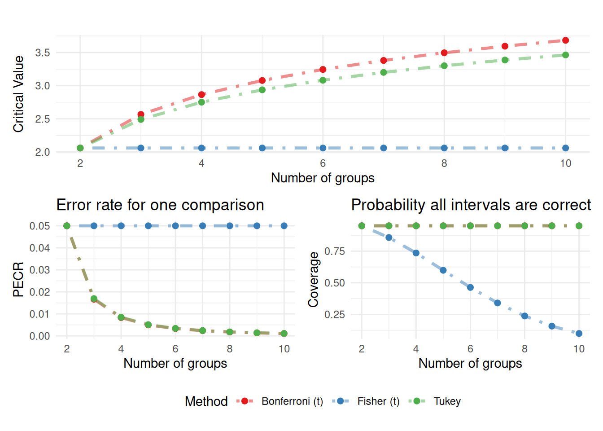
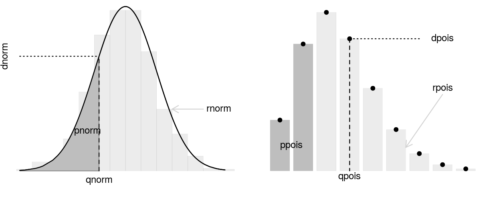
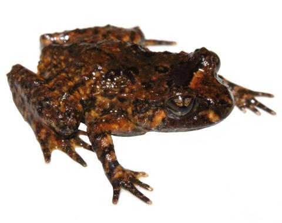
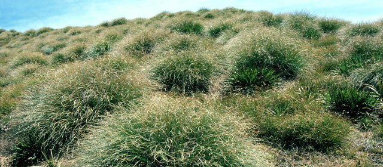
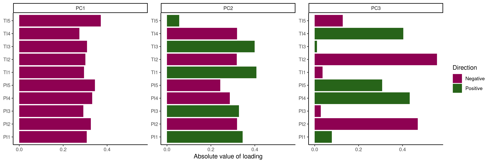
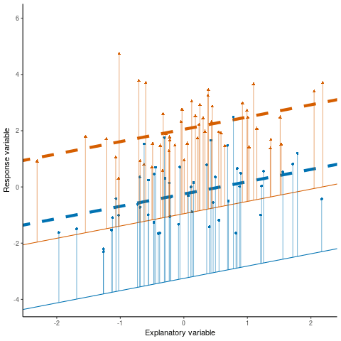
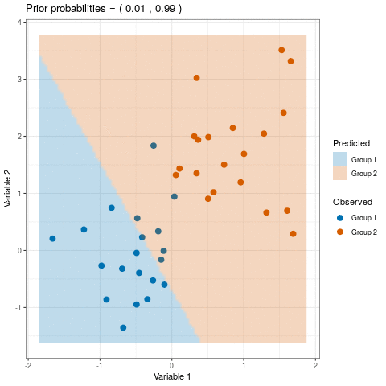
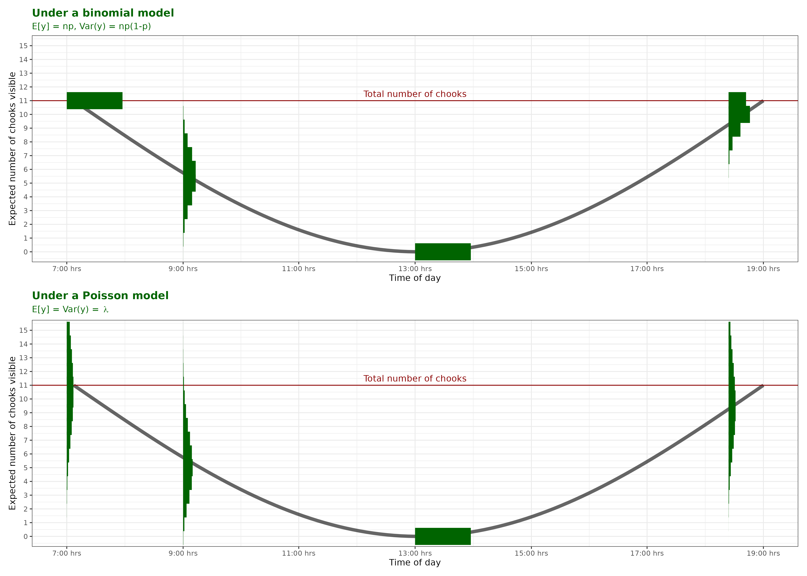

grepl("^[[:alnum:]._-]+@[[:alnum:].-]+[:alnum:]+$", c("larry@gmail.com", "larry-sally@sally.com", "larry@sally.larry.com", "test@test.com.", "charlottejones-todd"))[1] TRUE TRUE TRUE FALSE FALSEAll BIOSCI 738 lectures require your active involvement! See the course policies for further information.
Throughout this runsheet you’ll find a number of different callout boxes:
A big part of the learning experience in BIOSCI738 comes from you engaging with all the material suggested. Have you familiarised yourself with the BIOSCI738 CANVAS page and the Course policies and FAQs? Let’s see…
What’s the name of my dog? (hint he stars in the introductory video)
Try out the \(R^2\)-D2 AI agent specifically designed for this purpose. I would task yourself with around 30 questions, or until you are completely comfortable with the content (basically Module 1 from BIOSCI 220). If you’re stuck \(R^2\)-D2 will guide you through the answers too!


Each lecture will involve a a few group-based activities/discussion. It is your responsibility to organise yourselves into groups (see below). Feel free to reorganise the tables to suit your needs!
Designate roles:
Determine who is filling each role by order of upcoming birthdays:
In your groups quickly determine who is filling what role.
Once you have allocated group roles your Reporter should come to me to retrieve the first instruction!
Recently, there has been considerable interest in large language models: machine learning systems which produce human-like text and dialogue. Applications of these systems have been plagued by persistent inaccuracies in their output; these are often called “AI hallucinations”. We argue that these falsehoods, and the overall activity of large language models, is better understood as bullshit in the sense explored by Frankfurt (On Bullshit, Princeton, 2005): the models are in an important way indifferent to the truth of their outputs
This is an excerpt from the abstract of Hicks, Humphries, and Slater (2024).
If a student is confused about a concept, they can sit with ChatGPT and it will talk to them for hours about that particular concept.
It is a really great tool to create code but also a really great tool to prevent yourself from learning.
It’s teachers’ responsibility to motivate them and make such a problem that [students] are keen to solve and in a way that they actually would like to learn something and realize that they need these skills also in the future.
…there have always been so many ways of cheating, but I don’t think I’ve ever been aware of such an obvious, cheap, and easy way of cheating. Students can get [an AI tool] to answer any question I can ask them at the moment and therefore I have lost my ability to confidently assess any work that students hand in.
I think we need different kinds of professionals with different understandings of computing. Some need to be very deeply involved with how our programming languages work … others might only need some kind of overall understanding. They are not programmers by themselves, but they still should understand how software is produced.
All the above are quotes garnered in Sheard et al. (2024).
Below generative AI refers to tools that can generate text, code, explanations, or other content in response to prompts (e.g., large language models and AI coding assistants).
Upon the completion of this activity I will summarise the main themes/suggestions from Section 3.5.2 (that I deem appropriate). This will become the class-agreed group working Code of Conduct that you are expected to adhere to during each activity.
As a student of University of Auckland student, you are responsible for understanding and abiding by the requirements of the Student Charter.
In this activity we’re going to be talking about my and your expectation when working in a group during this class, see this section of the course guide for further details.
A Code of Conduct is not just a strange thing the university make you sign. They are a large part of many professional and research-focused bodies beyond university. The following lists just a few examples of societies or institutes you will likely come across during a biostats career in NZ.
For a more in-depth and general discussion I recommend reading Wilson et al. (2017).
Following this section of the course guide let’s talk about what good programming practice looks like in this course.
Honestly, I think the default RStudio behaviour of restoring .RData files etc. just makes everyone lazy…
During this course, very likely in other courses you’ll be taking this semester and in your future careers you will have to deal with many different datasets, wrangle “dirty” data and deal with data from different sources (at the very least). The key thing is to ensure that ANY ANALYSIS YOU CARRY OUT is TRANSPARENT and FULLY REPRODICIBLE (either for your peers or future you). This is where setting good foundations and devising a well-thought-out workflow is imperative!
Some people thing that a writing a large number of lines of code demonstrates prowess. It does not. Surely we’ve all added nonsense to essays to “fill up” the word count!
On the over hand some people strive for carrying out operations in the fewest number of lines possible. This typically makes their work impossible to follow!
I recommend finding a spot you’re comfortable in between the following code snippets.1 Most importantly keep your style readable & consistent!
grepl("^[[:alnum:]._-]+@[[:alnum:].-]+[:alnum:]+$", c("larry@gmail.com", "larry-sally@sally.com", "larry@sally.larry.com", "test@test.com.", "charlottejones-todd"))[1] TRUE TRUE TRUE FALSE FALSEor
email_addresses <- c("larry@gmail.com", "larry-sally@sally.com", "larry@sally.larry.com", "test@test.com.", "charlottejones-todd")
contain_at <- function(x){
grep("@", x)
}
idx <- contain_at(email_addresses)
correct_email <- email_addresses[idx]
correct_email[1] "larry@gmail.com" "larry-sally@sally.com" "larry@sally.larry.com"
[4] "test@test.com." contain_notrailing <- function(x){
grep("^[:alnum:]+", x)
}
idx01 <- contain_notrailing(correct_email)
final_correct_email <- correct_email[idx01]
final_correct_email[1] "larry@gmail.com" "larry-sally@sally.com" "larry@sally.larry.com"R script (or equivalent) is a roadmap to your work.
You should present the cleanest most direct route you can!
I recommend the latter approach below (if you were going to pass on your solution that is). It’s not that each step shouldn’t be carried out. On the contrary, exploring your data via printing and plotting it is very important! But when you have a solution, pare down your script! no need to take everyone on your journey.
## read in data
data <- readr::read_csv("a_valid_filename")
## printing data
print(data)
View(data) ##view opens up new window
data$variable
## Create new data object
newdata <- data$variable
newdata
## plot data
plot(newdata)
## calculate mean
mean <- mean(newdata)
print(mean)
## round
round(mean(newdata))vs
data <- readr::read_csv("a_valid_filename")
round(mean(data$variable))R script (or equivalent) showcases your approch!
There are a few quirks that AI insists on including in R scripts; with a bit of knowledge these are unnecessary. Rightly or wrongly as soon as I see these in a script I become suspicious!
print() statements e.g., print(variable)cat() statements e.g., cat("There are", variable, "students enrolled.\n")Anyone know why these are telltale signs?
library(tidyverse)
url <- "https://raw.githubusercontent.com/STATS-UOA/databunker/master/data/dicots_proportions.csv"
data <- read_csv(url)
data %>%
select(starts_with(c("Calluna", "Treat"))) %>%
## select only heather & treatment cols
group_by(`Treat!`) %>%
## group by treatment so calcs are done by group
summarise_all(list(mean = mean, sd = sd)) %>%
## cal mean and sd of each group
pivot_longer(!`Treat!`) %>%
## flip the data frame to "long" format
separate(name, c(NA, "year", "calc")) %>%
## extract and separate info from name column
mutate(year = as.numeric(str_remove(year, "vulgaris"))) %>%
## keep numeric year info only
pivot_wider(names_from = "calc", values_from = "value") %>%
## data into wider format based on mean & sd
mutate(`Treat!` = str_replace(`Treat!`, "HB", "BH")) %>%
## change treatment label HB to BH
mutate(`Treat!` = fct_relevel(`Treat!`,c("C", "B", "H", "BH"))) %>%
## relevel treatment to help with legend ordering later on
ggplot(., aes(x = year, y = mean, group = `Treat!`)) + ## set up plot
geom_point(aes(pch = `Treat!`)) + geom_line(aes(linetype = `Treat!`)) +
## add mean points & lines
ylab("Percentage cover") + xlab("Year") + ## axis labels
geom_errorbar(aes(ymin = mean - sd/sqrt(6),
ymax = mean + sd/sqrt(6)), width = .05) +
## add error-bars note we need the standard error of the mean of the proportion
scale_x_continuous(breaks = seq(8, 12, 1),
labels = seq(2008, 2012, 1),
expand = expansion(0.01),
limits = c(08, 12)) + ## match x-axis labels and limits
scale_y_continuous(breaks = seq(0, 1, 0.1), labels = seq(0, 100, 10),
expand = expansion(0.01),
limits = c(0, 0.7)) + ## match y-axis labels and limits
theme_classic() + ## closest in-built ggplot theme I could find
theme(legend.title = element_blank()) ## remove legend title
I’m going to attempt to do this on the fly. So, when I prompt you yell out an answer to the questions below!
In your groups
Be prepared to discuss your progress/thoughts with me as I wander around the class.
Extra things to think about: Could there be non-linear relationships?, Could there be interaction effects?, Could some predictors be correlated?, Could errors be non-constant or clustered?
Below is some R output showing data summaries and linear model summary output. In your groups, read through and interpret the output then, on the whiteboards sketch the model fit (including uncertainty), for each case.
data# A tibble: 30 × 21
film category `worldwide gross ($m)` `% budget recovered` `critics % score`
<chr> <chr> <dbl> <chr> <chr>
1 Ant-M… Ant-Man 518 398% 83%
2 Ant-M… Ant-Man 623 479% 87%
3 Aveng… Avengers 1395 382% 76%
4 Aveng… Avengers 2797 699% 94%
5 Aveng… Avengers 2048 683% 85%
6 Black… Black P… 1336 668% 96%
7 Black… Black P… 855 342% 84%
8 Black… Unique 379 190% 79%
9 Capta… Captain… 370 264% 79%
10 Capta… Captain… 1151 460% 90%
# ℹ 20 more rows
# ℹ 16 more variables: `audience % score` <chr>,
# `audience vs critics % deviance` <chr>, budget <dbl>,
# `domestic gross ($m)` <dbl>, `international gross ($m)` <dbl>,
# `opening weekend ($m)` <dbl>, `second weekend ($m)` <dbl>,
# `1st vs 2nd weekend drop off` <chr>, `% gross from opening weekend` <dbl>,
# `% gross from domestic` <chr>, `% gross from international` <chr>, …str(data)tibble [30 × 21] (S3: tbl_df/tbl/data.frame)
$ film : chr [1:30] "Ant-Man" "Ant-Man & The Wasp" "Avengers: Age of Ultron" "Avengers: End Game" ...
$ category : chr [1:30] "Ant-Man" "Ant-Man" "Avengers" "Avengers" ...
$ worldwide gross ($m) : num [1:30] 518 623 1395 2797 2048 ...
$ % budget recovered : chr [1:30] "398%" "479%" "382%" "699%" ...
$ critics % score : chr [1:30] "83%" "87%" "76%" "94%" ...
$ audience % score : chr [1:30] "85%" "80%" "82%" "90%" ...
$ audience vs critics % deviance: chr [1:30] "-2%" "7%" "-6%" "4%" ...
$ budget : num [1:30] 130 130 365 400 300 200 250 200 140 250 ...
$ domestic gross ($m) : num [1:30] 180 216 459 858 678 700 453 183 176 408 ...
$ international gross ($m) : num [1:30] 338 406 936 1939 1369 ...
$ opening weekend ($m) : num [1:30] 57 75.8 191 357 257 202 181 80.3 65 179 ...
$ second weekend ($m) : num [1:30] 24 29 77 147 114 111 66 25.8 25 72.6 ...
$ 1st vs 2nd weekend drop off : chr [1:30] "-58%" "-62%" "-60%" "-59%" ...
$ % gross from opening weekend : num [1:30] 31.8 35 41.7 41.6 38 28.9 48.6 43.8 36.8 43.9 ...
$ % gross from domestic : chr [1:30] "34.7%" "34.7%" "32.9%" "30.7%" ...
$ % gross from international : chr [1:30] "65.3%" "65.2%" "67.1%" "69.3%" ...
$ % budget opening weekend : chr [1:30] "43.8%" "58.3%" "52.3%" "89.3%" ...
$ year : num [1:30] 2015 2018 2015 2019 2018 ...
$ source : chr [1:30] "https://www.the-numbers.com/movie/Ant-Man#tab=summary" "https://www.the-numbers.com/movie/Ant-Man-and-the-Wasp#tab=summary" "https://www.the-numbers.com/movie/Avengers-Age-of-Ultron#tab=summary" "https://www.the-numbers.com/movie/Avengers-Endgame-(2019)#tab=summary" ...
$ critics_score : num [1:30] 83 87 76 94 85 96 84 79 79 90 ...
$ budget_recovered : num [1:30] 398 479 382 699 683 668 342 190 264 460 ...##### ##### ##### ###
##### Model 1 #######
##### ##### ##### ###
data %>%
lm(budget_recovered ~ critics_score, data = .) |>
summary()
Call:
lm(formula = budget_recovered ~ critics_score, data = .)
Residuals:
Min 1Q Median 3Q Max
-240.48 -101.16 -27.18 108.53 410.57
Coefficients:
Estimate Std. Error t value Pr(>|t|)
(Intercept) -242.513 215.335 -1.126 0.26964
critics_score 8.472 2.585 3.278 0.00279 **
---
Signif. codes: 0 '***' 0.001 '**' 0.01 '*' 0.05 '.' 0.1 ' ' 1
Residual standard error: 156.8 on 28 degrees of freedom
Multiple R-squared: 0.2773, Adjusted R-squared: 0.2515
F-statistic: 10.74 on 1 and 28 DF, p-value: 0.002795##### ##### ##### ###
##### Model 2 #######
##### ##### ##### ###
names(table(data$category)) [1] "Ant-Man" "Avengers" "Black Panther" "Captain America"
[5] "Dr Strange" "Guardians" "Iron Man" "Spider-Man"
[9] "Thor" "Unique" mod <- data %>%
lm(budget_recovered ~ category, data = .)
mod |> summary()
Call:
lm(formula = budget_recovered ~ category, data = .)
Residuals:
Min 1Q Median 3Q Max
-227.25 -95.92 -11.50 71.25 341.60
Coefficients:
Estimate Std. Error t value Pr(>|t|)
(Intercept) 438.500 109.360 4.010 0.000688 ***
categoryAvengers 170.750 133.938 1.275 0.216977
categoryBlack Panther 66.500 154.658 0.430 0.671808
categoryCaptain America -57.167 141.183 -0.405 0.689841
categoryDr Strange 4.500 154.658 0.029 0.977076
categoryGuardians 5.500 154.658 0.036 0.971984
categoryIron Man -9.167 141.183 -0.065 0.948876
categorySpider-Man 283.500 141.183 2.008 0.058339 .
categoryThor -64.000 133.938 -0.478 0.637950
categoryUnique -135.100 129.397 -1.044 0.308906
---
Signif. codes: 0 '***' 0.001 '**' 0.01 '*' 0.05 '.' 0.1 ' ' 1
Residual standard error: 154.7 on 20 degrees of freedom
Multiple R-squared: 0.4977, Adjusted R-squared: 0.2717
F-statistic: 2.202 on 9 and 20 DF, p-value: 0.06791##### ##### ##### ###
##### Model 3 #######
##### ##### ##### ###
mod <- data %>%
lm(budget_recovered ~ critics_score + category, data = .)
mod |> summary()
Call:
lm(formula = budget_recovered ~ critics_score + category, data = .)
Residuals:
Min 1Q Median 3Q Max
-221.617 -82.872 1.029 59.007 310.560
Coefficients:
Estimate Std. Error t value Pr(>|t|)
(Intercept) 26.257 279.136 0.094 0.9260
critics_score 4.850 3.041 1.595 0.1272
categoryAvengers 163.475 129.131 1.266 0.2208
categoryBlack Panther 42.250 149.789 0.282 0.7809
categoryCaptain America -63.633 136.092 -0.468 0.6454
categoryDr Strange 21.475 149.395 0.144 0.8872
categoryGuardians -11.475 149.395 -0.077 0.9396
categoryIron Man 8.616 136.488 0.063 0.9503
categorySpider-Man 251.167 137.534 1.826 0.0836 .
categoryThor -15.501 132.585 -0.117 0.9082
categoryUnique -74.961 130.253 -0.576 0.5717
---
Signif. codes: 0 '***' 0.001 '**' 0.01 '*' 0.05 '.' 0.1 ' ' 1
Residual standard error: 149 on 19 degrees of freedom
Multiple R-squared: 0.557, Adjusted R-squared: 0.3239
F-statistic: 2.389 on 10 and 19 DF, p-value: 0.04909##### ##### ##### ###
##### Model 4 #######
##### ##### ##### ###
data <- data %>%
rename(., "worldwide" = `worldwide gross ($m)`, "domestic" = `domestic gross ($m)`,
"international" = `international gross ($m)`)
mod <- lm(worldwide ~ 0 + domestic + international, data = data)
mod |> summary()
Call:
lm(formula = worldwide ~ 0 + domestic + international, data = data)
Residuals:
Min 1Q Median 3Q Max
-1.4167 -0.3363 0.4036 0.6414 0.8259
Coefficients:
Estimate Std. Error t value Pr(>|t|)
domestic 1.0016977 0.0010233 978.9 <2e-16 ***
international 0.9995891 0.0006227 1605.3 <2e-16 ***
---
Signif. codes: 0 '***' 0.001 '**' 0.01 '*' 0.05 '.' 0.1 ' ' 1
Residual standard error: 0.6566 on 28 degrees of freedom
Multiple R-squared: 1, Adjusted R-squared: 1
F-statistic: 4.147e+07 on 2 and 28 DF, p-value: < 2.2e-16##### ##### ##### ###
##### Model 5 #######
##### ##### ##### ###
mod <- lm(worldwide ~ budget*critics_score, data = data)
mod |> summary()
Call:
lm(formula = worldwide ~ budget * critics_score, data = data)
Residuals:
Min 1Q Median 3Q Max
-491.98 -169.76 -36.49 153.46 792.52
Coefficients:
Estimate Std. Error t value Pr(>|t|)
(Intercept) 1936.38319 1685.07029 1.149 0.2610
budget -12.31026 8.23297 -1.495 0.1469
critics_score -26.74895 19.92735 -1.342 0.1911
budget:critics_score 0.22214 0.09679 2.295 0.0301 *
---
Signif. codes: 0 '***' 0.001 '**' 0.01 '*' 0.05 '.' 0.1 ' ' 1
Residual standard error: 298.6 on 26 degrees of freedom
Multiple R-squared: 0.7479, Adjusted R-squared: 0.7189
F-statistic: 25.72 on 3 and 26 DF, p-value: 6.07e-08Below is an excerpt taken from Fisher (1926).2
If one in twenty does not seem high enough odds, we may, if we prefer it, draw the line at one in fifty (the 2 per cent. point), or one in a hundred (the 1 per cent. point). Personally, the writer prefers to set a low standard of significance at the 5 per cent. point, and ignore entirely all results which fail to reach this level. A scientific fact should be regarded as experimentally established only if a properly designed experiment rarely fails to give this level of significance. The very high odds sometimes claimed for experimental results should usually be discounted, for inaccurate methods of estimating error have far more influence than has the particular standard of significance chosen. – Page 504, Fisher (1926).
How long does it take Cai (my Vizsla you have already ‘met’) or Kobe (his best friend whom we’re currently dog-sitting) to find a hidden treat in minutes!
require(tidyverse)
data <- data.frame(Pet = rep(c("Kobe", "Cai"), each = 4),
Time = c(7,6,4,1.5,5,6,9.5,3))
means <- data %>%
group_by(Pet) %>%
summarise(means = round(mean(Time), 3))
vars <- data %>%
group_by(Pet) %>%
summarise(vars = round(var(Time), 3))
ggplot(data, aes(x = Pet, y = Time, col = Pet)) + geom_violin() + geom_point(aes(col = Pet), size = 3) +
xlab("") + ylab("Time taken to find treat (m)") + theme_light() +
annotate(geom = "text", x = means$Pet, y = means$means, label = paste("mu == ", means$means), parse = TRUE, col = c("#80CFF0", "#DFC0D0"), size = 6) +
annotate(geom = "text", x = vars$Pet, y = (means$means) - 0.75, label = paste("sigma^2 == ", vars$vars), parse = TRUE, col = c("#80CFF0", "#DFC0D0"), size = 6) +
scale_color_manual(values = c("#80CFF0", "#DFC0D0"))
Q Do you think the means of each group are significantly different from each other? Why or why not? Q Do you think the variances of each group are significantly different from each other? Why or why not?
How many times can you rearrange 8 values into two groups, each of size 4? Remember \(\binom{n}{k} = \frac{n!}{k!(n-k)!}\) the binomial coefficient! In our case, \(\binom{8}{4}\). Luckily R has the function choose(8,4)!

Using a permutation test (i.e., one that considers all possible re-combinations of our data, see animation above) we test the following hypothesis
NULL \(H_0: \mu_\text{Cai} = \mu_\text{Kobe}\) vs alternative \(H_1: \mu_\text{Cai} \neq \mu_\text{Kobe}\).
mean_diff <- means %>%
summarise(diff = diff(means)) %>%
as.numeric()
mean_diff
combinations <- combn(8,4) ## 70 in total
permtest_combinations <- apply(combinations, 2, function(x)
mean(data$Time[x]) - mean(data$Time[-x]))
p_val <- length(permtest_combinations[abs(permtest_combinations) >= abs(mean_diff)]) / choose(8,4)
p_val
## To be honest, all we've really done is carried out a t-test without the
## associated assumptions, compare this to the output from `t.test()`.
t.test(Time ~ Pet, data = data)BUT what if it wasn’t just a vanilla statistic we were interested in?
In your groups
Be prepared to discuss your progress/thoughts with me as I wander around the class.
A randomization test is really just a incomplete permutation test (i.e., one where we can’t be bothered, or have the computational power, to compute all possible combinations). For a randomization test we reshuffle randomly and hope that we do this enough times to construct a sampling distribution of our test statistic under the NULL hypothesis.

Let’s move on to some slightly more colourful data! Below is a subset of the data explored in Klemm and Jones-Todd (2026), where each vector gives the dominant colour of the surprise song3 outfit Taylor Swift wore during that leg of her Eras tour.

first_leg_outfits <- c("Pink", "Green", "Pink", "Green", "Green", "Pink", "Yellow",
"Pink", "Green", "Yellow", "Pink", "Green", "Green", "Pink",
"Yellow", "Pink", "Green", "Yellow", "Pink", "Yellow", "Green",
"Yellow", "Green", "Pink", "Pink", "Green", "Yellow", "Pink",
"Green", "Yellow", "Pink", "Yellow", "Yellow", "Pink", "Green",
"Pink", "Pink", "Yellow", "Yellow", "Pink", "Green", "Pink",
"Pink", "Yellow", "Pink", "Pink", "Pink", "Pink", "Yellow", "Green",
"Blue", "Blue", "Pink", "Green", "Yellow", "Blue", "Pink", "Yellow",
"Yellow", "Blue", "Green", "Blue", "Yellow", "Green", "Blue",
"Yellow", "Pink", "Green", "Yellow", "Pink", "Blue", "Pink",
"Blue", "Yellow", "Green", "Yellow", "Green", "Pink", "Pink",
"Yellow", "Blue")
europe_leg_outfits <- c("Flamingo pink", "Ocean blue", "Sunset orange", "Ocean blue",
"Flamingo pink", "Sunset orange", "Ocean blue", "Sunset orange",
"Flamingo pink", "Sunset orange", "Ocean blue", "Flamingo pink",
"Sunset orange", "Ocean blue", "Sunset orange", "Flamingo pink",
"Flamingo pink", "Ocean blue", "Sunset orange", "Sunset orange",
"Sunset orange", "Ocean blue", "Flamingo pink", "Ocean blue",
"Flamingo pink", "Sunset orange", "Sunset orange", "Ocean blue",
"Flamingo pink", "Sunset orange", "Flamingo pink", "Sunset orange",
"Ocean blue", "Sunset orange", "Ocean blue", "Flamingo pink",
"Sunset orange", "Ocean blue", "Flamingo pink", "Sunset orange",
"Ocean blue", "Sunset orange", "Flamingo pink", "Ocean blue",
"Flamingo pink", "Sunset orange", "Flamingo pink", "Sunset orange")
final_leg_outfits <- c("Cotton candy", "Blurple", "Grapefruit", "Popsicle", "Sunset orange",
"Blurple", "Cotton candy", "Popsicle", "Grapefruit", "Popsicle",
"Blurple", "Grapefruit", "Cotton candy", "Popsicle", "Blurple",
"Blurple", "Blurple", "Blurple")## helper function to make a transition matrix
transitions <- function(x) {
n <- length(x)
table(x[-n], x[-1])
}
first_leg_outfits |> transitions()
europe_leg_outfits |> transitions()
final_leg_outfits |> transitions()\(\chi^2\) statistic as a metric
## helper function
randomisation <- function(data, nreps = 1000, seed = 1984){
sampling_dist <- numeric(nreps)
set.seed(seed)
for (i in 1:nreps) {
sampling_dist[i] <- suppressWarnings(sample(data) |>
transitions() |>
chisq.test())$statistic
}
return(sampling_dist)
}
## first leg
null_first <- randomisation(first_leg_outfits)
mean(null_first >= (first_leg_outfits |> transitions() |> chisq.test())$statistic)
## now try the other legs!
## compare to a traditional Chi-square test
## does your inference make sense?
## create a plot comparing your sampling distribution
## of the test statistic under the NULL and the
## observed valueWhat about a particular outfit transition?
## helper function
randomisation <- function(data, from, to,
nreps = 1000, seed = 1984){
sampling_dist <- numeric(nreps)
set.seed(seed)
for (i in 1:nreps) {
sampling_dist[i] <- (sample(data) |> transitions())[from, to]
}
return(sampling_dist)
}
## European leg, Ocean blue --> Ocean blue
null_mid <- randomisation(europe_leg_outfits, from = "Ocean blue", to = "Ocean blue")
obs_mid <- (europe_leg_outfits |> transitions())["Ocean blue", "Ocean blue"]
mean(abs(null_mid - mean(null_mid)) >= abs(obs_mid - mean(null_mid)))
## now try the other legs and/or other transitions!
## does your inference make sense?
## create a plot comparing your sampling distribution
## of the test statistic under the NULL and the
## observed value
## Devise your own metric to represent what is of interest to youA bootstrap is a procedure for finding the (approximate) sampling distribution of a statistic/parameter of interest from a single data sample. We assume that,

Some of my 2022 pumpkin haul

In your groups run through the R code below and discuss/answer each question posed in the comments. Figure out what each line of code does and replace the comments with your own.
Be prepared to discuss your progress/thoughts with me as I wander around the class.
library(tidyverse)
## data about the weight, height, and width of some of my homegrown 2022 pumpkins
data <- read_csv("https://raw.githubusercontent.com/STATS-UOA/databunker/master/data/pumpkins.csv")
#####################
## pairsplot
GGally::ggpairs(data)
## change to kg
data <- data %>%
mutate(weight_kg = weight_g/1000)
## Pairwise relationships between the three
## dimensions all appear approximately linear,
## with a high correlation
######################
## linear model
## Fitted model.
fit <- lm(weight_kg ~ height_mm + width_mm, data = data)
fit |> summary()
## fitted values
fitted(fit) ## notice anything strange?
## estimated error variance
summary(fit)$sigma^2
## standard errors for the estimated coefficients
summary(fit)$coefficients[, 2]
## New pumpkins
## pumpkin 1, height_mm 150, width_mm 240
## pumpkin 2, height_mm 100, width_mm 160
new <- data.frame(height_mm = c(150, 100), width_mm = c(240, 160))
## pumpkin 1 (~) 60% bigger than pumpkin 2
data %>%
ggplot(., aes(y = height_mm , x = width_mm)) +
geom_point() + geom_smooth(method = "lm") +
geom_point(data = new, col = "red")
## point predictions
predict(fit, newdata = new)
## confidence intervals
predict(fit, newdata = new, interval = "confidence")[, 2:3]
## prediction intervals
predict(fit, newdata = new, interval = "prediction")[, 2:3]
## pumpkin 1 is 60% larger than pumpkin 2 in terms of height and width. If
## pumpkin growth is isometric, then pumpkin 1's expected weight will be 60% larger than
## pumpkin 2s (ratio 1.6). If the ratio is less than 60% (1.6), then we have negative allometric growth
## (pumpkins get less heavy , relative to the other dimensions), otherwise we have
## positive allometric growth (> 1/6) (pumpkins tend to get heavier as they grow, relative
## to the other dimensions).
## under model above what is the estimated ratio of pumpkin 1 weight (kg) to pumpkin 2 weight (kg)
mu <- predict(fit, newdata = new)
mu[1]/mu[2]
## Compute a confidence interval for this ratio using 1) a parametric and 2)a non-parametric bootstrap.
###########################################################
## Parametric (resample from assumed response distribution)
###########################################################
## seed
set.seed(1567)
## number of bootstrap iterations
nreps <- 1000
## initialize empty array to hold results
bootstrap_ratios <- numeric(nreps)
## bootstrap iterations.
for (i in 1:nreps){
## Simulating new response data assuming Normal response
data$boot <- rnorm(nrow(data), fitted(fit), summary(fit)$sigma)
## Fitting the model to the bootstrapped response
fit_boot <- lm(boot ~ height_mm + width_mm, data = data)
## Calculating the estimated expectations for new pumpkins
mu_new <- predict(fit_boot, newdata = new)
## Saving the estimated ratio from the bootstrap model fit.
bootstrap_ratios[i] <- mu_new[1]/mu_new[2]
}
hist(bootstrap_ratios)
abline(v = mu[1]/mu[2], lwd = 2, col = "red")
## CI
CI_parametric <- quantile(bootstrap_ratios, c(0.025, 0.975))
CI_parametric
## The confidence interval from the parametric bootstrap does not contain 1.6. We
## therefore have evidence in favour of positive allometric growth.
###########################################################
## Non-parametric (resample from observed data)
###########################################################
## seed
set.seed(7651)
## number of bootstrap iterations
nreps <- 1000
## initialize empty array to hold results
bootstrap_ratios <- numeric(nreps)
## bootstrap iterations.
for (i in 1:nreps){
## Bootstrap resample
boot.df <- data[sample(nrow(data), replace = TRUE), ]
## Fitting the model to the bootstrapped response
fit_boot <- lm(weight_kg ~ height_mm + width_mm, data = boot.df)
## Calculating the estimated expectations for new pumpkins
mu_new <- predict(fit_boot, newdata = new)
## Saving the estimated ratio from the bootstrap model fit.
bootstrap_ratios[i] <- mu_new[1]/mu_new[2]
}
hist(bootstrap_ratios)
abline(v = mu[1]/mu[2], lwd = 2, col = "red")
## CI
CI_non_parametric <- quantile(bootstrap_ratios, c(0.025, 0.975))
CI_non_parametric
## What do you think is going on here and why.Under the additive model how much of a kilogram does a pumpkin increase on average for every millimeter (mm) in height? (2 dps)
Estimated weight of Pumpkin 2 (kg) (2 dps)
Ratio of pumpkin 1 weight to pumpkin 2 weight (additive model) (2 dps)
Which bootstrap gives the wider 95% confidence interval, parametric or non-parametric?
Abalone are large, edible sea snails. Their age is determined by cutting the shell through the cone, staining it, and counting the number of rings through a microscope! Below we’re going to look at some abalone data collected by Nash et al. (1994). These data contains ten columns: a categorical variable (Sex), seven continuous variables (Length, Diameter, Height, Whole weight, Shucked weight, Viscera weight, and Shell weight), a count variable (number of rings) and categorical variable which classifies abalone into three ring classes (Class) in which abalone with 8 or fewer (Class = 1), 9 or 10 (Class = 2), and 11 or more (Class = 3) rings.
Now, let’s say we’re interested in testing the NULL hypothesis of no difference in mean diameter between male, female and infant abalone of different ring classes.
abalone <- read_csv("https://raw.githubusercontent.com/STATS-UOA/databunker/master/data/abalone.csv")
## make sure Class is categorical
abalone$Class <- as.factor(abalone$Class)
## fit interaction model
## ANOVA way
aov <- aov(Diameter ~ Sex * Class, data = abalone)
## lm way (both the same!)
lm(Diameter ~ Sex * Class, data = abalone) |> anova()
## at about the sampling variability of the interaction F-statistic?
## extract statistic
F_obs <- summary(aov)[[1]]["Sex:Class","F value"]
## Bootstrap!
nreps <- 1000
## initialize empty array to hold results
bootstrap_Fs <- numeric(nreps)
## bootstrap iterations.
for (i in 1:nreps){
## Simulating with replacement
## to "mirror" a potential other sample from the
## population
boot <- abalone[sample(1:nrow(abalone), replace = TRUE), ]
## ANOVA using resampled data!
aov <- aov(Diameter ~ Sex * Class, data = boot)
bootstrap_Fs[i] <- summary(aov)[[1]]["Sex:Class","F value"]
}
## ~approximates the sampling distribution of
## the F-statistic if we repeatedly sampled abalone from the populationLet’s test the NULL hypothesis \(H_0:\) No interaction between Sex and Class.
Recall, that permutation (aka randomisation) tests simulate data that would occur if this null hypothesis were true.
Now, instead of resampling with replacement, we’re going to shuffle data in a way that preserves the NULL model.
## method 1
## permutation under reduced model
## additive only model
fit_add <- aov(Diameter ~ Sex + Class, data = abalone)
fitted_vals <- fitted(fit_add)
res <- residuals(fit_add)
## permute residuals; reconstruct response; fit full model
nreps <- 1000
## initialize empty array to hold results
Fs <- numeric(nreps)
for (i in 1:nreps){
res_perm <- sample(res) ## resample residuals
y_star <- fitted_vals + res_perm ## 'new' response
## ANOVA using 'new' data!
aov <- aov(y_star ~ Sex * Class, data = abalone)
Fs[i] <- summary(aov)[[1]]["Sex:Class","F value"]
}
## Fs, is the sampling distribution when there
## interaction effect is zero (NULL in out case)
## evidence against this shows our observed Fs
## is not consistent with the NULL
mean(Fs >= F_obs)## method 2
## permutation under full model
fit_full <- aov(Diameter ~ Sex * Class, data = abalone)
res <- residuals(fit_full)
## permute residuals; reconstruct response; fit full model
nreps <- 1000
## initialize empty array to hold results
Fs <- numeric(nreps)
for (i in 1:nreps){
res_perm <- sample(res) ## resample residuals
## fit full model to permuted residuals
## ANOVA using 'new' data!
aov <- aov(res_perm ~ Sex * Class, data = abalone)
Fs[i] <- summary(aov)[[1]]["Sex:Class","F value"]
}
## more `conservative` than method 1
mean(Fs >= F_obs)## method 3
## permutation of response
## test assumes responses are exchangeable
nreps <- 1000
## initialize empty array to hold results
Fs <- numeric(nreps)
for (i in 1:nreps){
y_perm <- sample(abalone$Diameter) ## resample response
## fit full model to permuted response
## ANOVA using 'new' data!
aov <- aov(y_perm ~ Sex * Class, data = abalone)
Fs[i] <- summary(aov)[[1]]["Sex:Class","F value"]
}
mean(Fs >= F_obs)
Otherwise known as least squares regression, by default lm() seeks to minimize the squared Euclidean distance between the observations and the fitted line.

lm()


Below, we investigate the relationship between the photosynthetic rate (µmol CO2 \(m^-2 s^-1\)) of sunflower leaves and light intensity (PAR, µmol \(m^-2 s^-1\)) (the plot below shows a subset of the data detailed in Davis, Mason, and Goolsby (2026)).

What does a linear model look like for these data?

And the residual plots?

OK, so not a great fit. Could we perhaps improve our fit using other variables? Note, these data are contained in the R package photosynthesisLRC (Davis and Goolsby (2025)) as the object sunflowers:
require(photosynthesisLRC)
data <- sunflowers[sunflowers$Replicate == 1,]In your groups, fit, interpret, and critique the models below? Which is the “best” fitting model (out of the three fitted below)? Create a plot of this model and be prepared to share it as I wander around the class.
## MODEL 1
fit_01 <- lm(A ~ PARi, data = data)
summary(fit_01)
anova(fit_01)
## MODEL 2
fit_02 <- lm(A ~ PARi + Species, data = data)
summary(fit_02)
anova(fit_02)
## MODEL 3
fit_03 <- lm(A ~ PARi * Species, data = data)
summary(fit_03)
anova(fit_03)
## model fit
AIC(fit_01, fit_02, fit_03)
anova(fit_01,fit_02, fit_03)Q1. Which model is preferred based on AIC?
Q2. What does the ANOVA comparison between Model 1 and Model 2 indicate?
Q3. What does the ANOVA comparison between Model 2 and Model 3 indicate?
Q4. Which statement best describes Model 3 biologically?
Q5. Why is Model 3 preferred despite having more parameters?
Now, Davis and Goolsby (2025) is an R package that
Provides functions for modeling, comparing, and visualizing photosynthetic light response curves using established mechanistic and empirical models like the rectangular hyperbola Michaelis-Menton based models…
For example, one such function is Equation 1 of Lobo et al. (2013):
\[A = \frac{\alpha \, I \, A_{\max}}{\alpha \, I + A_{\max}} - R_d\]
where, \(A\) = net photosynthesis, \(I\) = irradiance (light intensity), \(\alpha\) = apparent quantum efficiency (initial slope), \(A_{\max}\) = maximum gross photosynthesis, and \(R_d\) = dark respiration.
Below we plot this mechanistic non-linear model for our data in R.
## plotting a mechanistic (non-linear) model to our data
photosyn_fun <- function(PARi, alpha = 5.4e-02, Amax = 27.5, Rd = 1.94) {
(alpha * PARi * Amax) / (alpha * PARi + Amax) - Rd
}
pari <- seq(min(data$PARi), max(data$PARi), length.out = 1000)
preds <- data.frame( A_expected = photosyn_fun(pari), PARi = pari)
ggplot(data, aes(x = PARi, y = A)) +
geom_point(col = "grey") + theme_light() +
geom_line(data = preds, aes(y = A_expected), size = 2) +
xlab("PAR (µmol m^-2 s^-1)") + ylab("Photosynthetic rate (µmol CO2 m^-2 s^-1)") +
ggtitle("Mechanistic model for the photosynthetic rate")
lm() for this?… but the aim of today is to show you how a polynomial regression model fitted using lm() can recreate the shape of a non-linear model


Above show my best lm() model to ‘recreate’ the mechanistic curve above. Note
I(x^a) or poly(x, a), I’m not telling you which ones!)Species information, but from above it seems like this would be important information to include in a model…In your groups discuss what may be an appropriate model for these data. This will be an iterative process. Fit & interpret your “best” model, Discuss, how you decided on your “best” model.
You may find the function dredge from the R package MuMIn useful for model selection. dredge() generates a model selection table of models with combinations of fixed effect terms in the given global (full) model. By default dredge() uses AICc as its model comparison metric. (p.s. you may need to set na.action = na.fail in your lm() call for dregde() to work)
In-class content
Figure 1 in Klemm and Jones-Todd (2026) shows which “surprise” dresses were worn during which concerts in Taylor Swift’s Eras Tour. According to the text of the article, Figure 1 is supposed to show:
In your groups take a look at Figure 1 and roast (yes you can be as mean as you like, honestly) or admire it4 You will have no doubt read and digested this section of the course guide, so you will have some basis for critiquing the plot.
Be prepared to discuss your progress/thoughts as we wander around the class.
The code below (which will open given a keyword) creates the figure you’ve been roasting. Now it’s your turn to follow through on your critiques. Using the code below as a baseline (if you wish) create a new and improved version of Figure 1.
Be prepared to show us your progress as we wander around the class! Remember to take the opportunity to pick Paul’s brain!
Pay attention for the keyword to unlock what’s below!
The degree of freedom is
R function
#' A function I wrote to plot the Sums of Squares
#' from ANOVA output showing the partition
#' @param x Either an object of class 'aov' or 'anova'
#' @param upset Logical, if TRUE then an upset plot rather than a
#' Venn diagram is drawn
require(venneuler)
require(stringr)
require(UpSetR)
vova <- function(x, upset = FALSE){
if("aov" %in% class(x)) {
ss = summary(x)[[1]]
}else{
if("anova" %in% class(x)){
ss = x
}else{
stop("Unknown input: x mush be of class 'aov' or 'anova'.")
}}
n = nrow(ss)
rnms = stringr::str_trim(rownames(ss)[1:(n-1)])
nms = paste("SS(", rnms,")", sep = "")
res = ss["Residuals", "Sum Sq"]
pt = eval(paste(nms, "=", round(ss$"Sum Sq"[1:(n-1)], 2)))
if(length( grep(":", rnms)) > 0) rnms = stringr::str_replace(rnms, ":", "&")
expr = setNames(round(ss$"Sum Sq"[1:(n-1)], 4), rnms)
if(!upset){
v = venneuler::venneuler(expr)
plot(v)
box()
legend("bottomright", bty = "n", legend = paste("SS(Residuals) =", round(res, 2)))
legend("topleft", bty = "n", legend = pt)
}else{
if(upset){
UpSetR::upset(UpSetR::fromExpression(expr), sets.x.label = "SS(Main effects)",
mainbar.y.label = "SS(Interaction)", nsets = n)
}
}
}In your groups run through the R code below that fits a range of models to data from Module 3 the courseguide and discuss/answer each question posed in the comments. Work out what each line of code does and replace the comments with your own more informative ones.
Be prepared to discuss your progress/thoughts with me as I wander around the class. NOTE: you will need the R function vova() from the drop down box above.
## NOTE you will need the function vova() from the drop down above
url <- "https://raw.githubusercontent.com/STATS-UOA/databunker/master/data/factorial_expt.csv"
data <- readr::read_csv(url)
## example 1
lm(logAUC ~ Disease*Organ, data = data) |> aov() |> summary()
lm(logAUC ~ Disease*Organ, data = data) |> aov() |> vova()
## example 2
lm(logAUC ~ Organ*Disease, data = data) |> aov() |> summary()
lm(logAUC ~ Organ*Disease, data = data) |> aov() |> vova()
## example 3
lm(logAUC ~ Organ + Disease, data = data) |> aov() |> summary()
lm(logAUC ~ Organ + Disease, data = data) |> aov() |> vova()
################
## unbalanced ##
################
unbal <- data[-c(1, 3),]
## example 1
lm(logAUC ~ Disease*Organ, data = unbal) |> aov() |> summary()
lm(logAUC ~ Disease*Organ, data = unbal) |> aov() |> vova()
## example 2
lm(logAUC ~ Organ*Disease, data = unbal) |> aov() |> summary()
lm(logAUC ~ Organ*Disease, data = unbal) |> aov() |> vova()
## example 3
lm(logAUC ~ Organ + Disease, data = unbal) |> aov() |> summary()
lm(logAUC ~ Organ + Disease, data = unbal) |> aov() |> vova()
## type II
lm(logAUC ~ Organ*Disease, data = unbal) |> car::Anova(type = 2)
lm(logAUC ~ Organ*Disease, data = unbal) |> car::Anova(type = 2) |> vova()
## Three way ANOVA Example only.
## example 1
lm(logAUC ~ Disease*Organ*Animal, data = data) |> aov() |> summary()
lm(logAUC ~ Disease*Organ*Animal, data = data) |> aov() |> vova()
## example 2
lm(logAUC ~ Organ*Animal + Disease, data = data) |> aov() |> summary()
lm(logAUC ~ Organ*Animal + Disease, data = data) |> aov() |> vova()
## type II
lm(logAUC ~ Organ*Disease + Animal, data = unbal) |> car::Anova(type = 2)
lm(logAUC ~ Organ*Disease + Animal, data = unbal) |> car::Anova(type = 2) |> vova()In your groups discuss and answer the following points/questions, which relate the the snippet of code that follows.
n, and why?Now, amend the code to test the same thing using another statistical test of your choice.
n <- 10000
t1err <- 0
for (i in 1:n){
set.seed(1432 + i)
x <- rnorm(100, 0, 1)
if (((t.test(x, mu = 0))$p.value)<=0.05) (t1err = t1err + 1)
}
cat("Type I error rate in percentage is", (t1err/n)*100,"%", "\n")Calculating (95%) Confidence Intervals
Typically:
\[ \text{Upper bound} = \text{estimate} + (\text{scale factor} \times SE) \]
\[ \text{Lower bound} = \text{estimate} - (\text{scale factor} \times SE) \]
Now, imagine our quantity of interest is the difference between means (i.e., \(\text{difference}\)) :
\[ \text{Upper bound} = \text{difference} + (\text{scale factor} \times SED) \]
\[ \text{Lower bound} = \text{difference} - (\text{scale factor} \times SED) \]
OK, but how do we choose our \(\text{scale factor}\)? We have three5 options:
| Fisher (LSD)6 | Bonferroni Correction | Tukey (HSD) | |
|---|---|---|---|
| \(\text{scale factor}\) | \(t_{\alpha = \frac{\alpha_c}{2}, \, df = N -m}\) | \(t_{\alpha = \frac{\alpha_c}{2\cdot k}, \, df= N -m}\) | \(q_{\alpha = 1- \alpha_c, \, m, \, df = N -m}\) |
where,
\(N\) the number of observations
\(m\) the number of treatment groups
\(SED\) standard error of the difference between means
\(k = {m\choose2} = \frac{m(m-1)}{2}\) the number of pairwise comparisons being made
\(\alpha_c\) the per comparison error rate (e.g., 0.05)
\(df\) degrees of freedom
\(t_{\alpha, df}\): Critical value from the t-distribution
\(q_{\alpha, m, df}\): Critical value from the studentized range distribution (Tukey)

Code Along
library(tidyr)
library(ggplot2)
set.seed(1)
alpha <- 0.05
n <- 20 ## number of observations
nsim <- 500 ## number of simulations
m_vals <- 2:8 ## number of groups
## initialise empty vectors
det_fisher <- det_tukey <- det_bonf <- numeric(length(m_vals))
err_fisher <- err_tukey <- err_bonf <- numeric(length(m_vals))
## simulation loop
for(i in seq_along(m_vals)) {
m <- m_vals[i]
## start "detect" counter at 0
fisher_detect <- tukey_detect <- bonf_detect <- 0
fisher_error <- tukey_error <- bonf_error <- 0
for(sim in 1:nsim) {
## One TRUE difference
means <- c(0.5, rep(0, m-1)) ## one 'true' difference
y <- rnorm(n*m, mean = rep(means, each = n))
## check boxplot(y~rep(1:length(means), each = n))
group <- factor(rep(1:m, each = n))
## Fisher (no correction - t-test)
fisher <- pairwise.t.test(y, group, p.adjust.method = "none")
if(any(fisher$p.value < alpha, na.rm = TRUE)) {
fisher_detect <- fisher_detect + 1
}
## Bonferroni
bonf <- pairwise.t.test(y, group, p.adjust.method = "bonferroni")
if(any(bonf$p.value < alpha, na.rm = TRUE)) {
bonf_detect <- bonf_detect + 1
}
## Tukey
fit <- aov(y ~ group)
if(any(TukeyHSD(fit)$group[, "p adj"] < alpha)) {
tukey_detect <- tukey_detect + 1
}
## No difference
y <- rnorm(n*m, mean = 0)
fisher <- pairwise.t.test(y, group, p.adjust.method = "none")
bonf <- pairwise.t.test(y, group, p.adjust.method = "bonferroni")
tukey <- TukeyHSD(aov(y ~ group))
fisher_error <- fisher_error + any(fisher$p.value < alpha, na.rm = TRUE)
bonf_error <- bonf_error + any(bonf$p.value < alpha, na.rm = TRUE)
tukey_error <- tukey_error + any(tukey$group[, "p adj"] < alpha)
}
det_fisher[i] <- fisher_detect/nsim
det_bonf[i] <- bonf_detect/nsim
det_tukey[i] <- tukey_detect/nsim
err_fisher[i] <- fisher_error/nsim
err_bonf[i] <- bonf_error/nsim
err_tukey[i] <- tukey_error/nsim
}
power_df <- data.frame(m = m_vals, Fisher = det_fisher, Bonferroni = det_bonf, Tukey = det_tukey)
error_df <- data.frame(m = m_vals, Fisher = err_fisher, Bonferroni = err_bonf, Tukey = err_tukey)
power_df |>
pivot_longer(-m, names_to = "method", values_to = "detect") |>
ggplot(aes(m, detect, colour = method)) +
geom_line(linewidth = 1.2) +
geom_point(size = 2) +
scale_colour_brewer(palette = "Set1") +
labs( x = "Number of groups",y = "Proportion of times a difference detected", colour = "Method") +
theme_minimal()
error_df |>
pivot_longer(-m, names_to = "method", values_to = "detect") |>
ggplot(aes(m, detect, colour = method)) +
geom_line(linewidth = 1.2) +
geom_point(size = 2) +
scale_colour_brewer(palette = "Set1") +
labs( x = "Number of groups",y = "Family-wise error rate", colour = "Method") +
geom_hline(yintercept = 0.05, linetype = "dashed") +
theme_minimal() n <- 12
data <- data.frame(group = factor(rep(c("A","B","C","D"), each = n)),
y = c(12.7419168942933, 8.87060365720782,
10.7262568226747, 11.2657252099221, 10.808536646282, 9.78775096781703,
13.0230439948779, 9.8106819231738, 14.0368474277541, 9.87457180189516,
12.609739308447, 14.5732907854022, 8.42227859777532, 10.6424224663653,
10.9333573272127, 12.4719007961401, 10.6314941571679, 5.88708915819045,
6.31906614284896, 13.8402266914604, 10.586722811843, 7.63738313204,
10.8561652884808, 13.6293493983452, 16.7903869225299, 12.1390617367876,
12.4854612344621, 9.47367382961044, 13.9201947096625, 11.7200102480798,
13.9109002464824, 14.4096746744576, 15.0702070439398, 11.7821472491856,
14.0099102465959, 9.56598264185332, 8.93108198324101, 8.79818481164696,
5.67158470010674, 10.5722452137845, 10.9119972004005, 9.77788540290267,
12.016326471399, 9.04659034584685, 7.76343791116141, 11.3656360517774,
8.87721364762666, 13.3882025234425))lm <- lm(y ~ group, data = data)
pm <- predictmeans::predictmeans(lm, modelterm = "group", pairwise = TRUE, plot = FALSE, level = 0.05/choose(4,2), adj = "bonferroni")
url <- "https://gist.github.com/cmjt/72f3941533a6bdad0701928cc2924b90"
devtools::source_gist(url, quiet = TRUE)
comparisons(pm)Using the data above perform the pairwise comparisons of means using Fisher’s LSD with \(\alpha = 0.05\) level of significance.
Summarise and present these results in a table with the following column names Comparison, Calculated difference (in means), SED (standard error of the difference), LSDs, Lower 95% CI & Upper 95% CI (lower & upper 95% confidence interval), statistic, p-value.
Calculate the scale factor (i.e., critical value of the assumed distribution) using 1) Bonferroni’s correction method and 2) Tukey’s HSD method for any pairwise comparison 95% CI from above. Discuss what effect the multipliers might have on inference by constructing and comparing the respective pairwise comparisons tables (e.g., as in 2).
NOTE: you may find this section of the course guide useful for this activity; in particular this function I wrote might be of use, which can be loaded into R using url <- "https://gist.github.com/cmjt/72f3941533a6bdad0701928cc2924b90" and devtools::source_gist(url, quiet = TRUE).
RIn-class content
IOAs are novel, low-stakes authentic assessments, designed to promote academic integrity and prepare students for the workplace. Communication as a key skill in the UoA’s graduate profile and is integral for students’ skill development and employability. An IOA is authentic because it is based on a real-world scenario and promotes student engagement and facilitates higher-order thinking. It also preserves academic integrity through its unscripted conversation prompts based on student responses.
Discuss the Biota of University of Auckland City Campus iNaturlist data
If you’ve not already Sign Up and download any subset of these data.
In pairs, take on the following roles in turn Consultant and Client.
As the Client answer the following questions about the iNaturalist data for you Significance Article + Code.
As the Consultant, your role is to question the Client and ask for specific details/clarifications along the way. After the Q&A session, you should be able to surmise your Client’s project in your own words.
Feel free to ask any IOA related questions to either Adam or I as we wander around the class.
This section briefly quizzes you on the terms and concepts discussed in this section of the course guide and Emi Tanaka’s edibble ebook. Refer tho these sources for more details definitions.
Experimental design quiz
Why are specific objectives important?
What is the response variable?
What is an experimental factor?
Why list the experimental factors?
What is the experimental material?
Why is a ‘shared environment’ an issue?
Read and critique this blog! Pseudoreplication: choose your data wisely
Scenario
Imagine that you are a plant biologist testing the effect of four fertilizer types on the growth of an alien plant species. Below are the design features of your setup!
In your groups discuss
Then choose one or more of the following R packages (edibble, agricolae or AlgDesign) to structure/design the above experimental scenario (i.e., figure out how to allocated treatments to units etc.).
NOTE: you may find this application useful to structure your thoughts.
Now, once you’ve shown your design to Charlotte you’ll get a keyword to access some data below!
As a group model the data unlocked above and
Your reporter (remember Section 3.2) will then give a short presentation to the class talking us through the plots!
Slides - code along
base_url <- "https://raw.githubusercontent.com/STATS-UOA/databunker/master/data/"
rcbd <- readr::read_csv(paste(base_url, "rcbd.csv", sep = ""))
rcbd$Run <- as.factor(rcbd$Run)
lm <- lm(logAUC8 ~ Run + Surgery, data = rcbd)
lm |> summary()
anova(lm)
lmer4_mod <- lme4::lmer(logAUC8 ~ Surgery + (1|Run), data = rcbd)
coefficients(lmer4_mod)
lmer4_mod |> summary()
As a group, work though each of the case studies given below answering/discussing the prompts as you go. You’ll notice a few extra packages and functions getting used :-)
Visiting this section of the course guide may be useful.
require(tidyverse)
require(lme4)
require(predictmeans)
rcbd <- read_csv("https://raw.githubusercontent.com/STATS-UOA/databunker/master/data/rcbd.csv")
## turn appropriate variables into factors
rcbd <- rcbd %>%
mutate(Run = as.factor(Run)) %>%
mutate(Surgery = as.factor(Surgery))
## run as a fixed effect
lm(logAUC8 ~ Run + Surgery, data = rcbd) |> summary()
## run as a random effect, what's the difference?
lmm <- lme4::lmer(logAUC8 ~ Surgery + (1|Run), data = rcbd)
summary(lmm)
## diagnostics estimated variance partitioning and more...
## these are really useful utility functions!
predictmeans::residplot(lmm)
predictmeans::R2_glmm(lmm)
predictmeans::se_ranef(lmm)
predictmeans::varcomp(lmm)
predictmeans::permmodels(lmm) ## remember permutation tests, what are we using them for here? Compare to a summary() outputNow, we’re going to get a little more advanced and model some data from Bliss-Moreau and Baxter (2019) (data retrieved from Bliss-Moreau and Baxter (2020)). To do so we’re following along (somewhat) with the steps summarised in Dan (2022). Revisiting Section 11.2 may, again, be useful here.
## wrangle as per Dan's blog
require(tidyverse)
data <- read_csv("https://raw.githubusercontent.com/STATS-UOA/databunker/master/data/monkey.csv")
data %>%
ggplot(., aes(x = age, y = Activity)) +
geom_point()
## Number of active intervals in the first two minutes (0-8)
activity_2mins <- data |>
filter(obs<9) |> group_by(subj_id, Day) |>
summarize(total=sum(Activity),
active_bins = sum(Activity > 0),
age = min(age)) |>
rename(monkey = subj_id, day = Day) |>
ungroup()
length(table(activity_2mins$monkey))
activity_2mins %>%
ggplot(., aes(x = age, y = total, col = as.factor(monkey))) +
facet_wrap(~day) +
geom_point() + theme(legend.position = "none")
## Linear model...
fit_lm <- lm(active_bins ~ age*factor(day) + factor(monkey), data = activity_2mins)
fit_lm |>
summary()
## ignore monkeys
fit_lm_pool <- lm(active_bins ~ age*factor(day), data = activity_2mins)
fit_lm_pool |>
summary()
fit_lm_pool |> gglm::gglm() ## and what do we think here?
## plot
plot(fit_lm_pool$fitted, fit_lm_pool$residuals)
## why scale?
age_centre <- mean(activity_2mins$age)
age_scale <- diff(range(activity_2mins$age))/2
active_bins_centre <- 4
activity_2mins_scaled <- activity_2mins |>
mutate(monkey = factor(monkey),
day = factor(day),
age_centred = (age - age_centre)/age_scale,
active_bins_scaled = (active_bins - active_bins_centre)/4)
glimpse(activity_2mins_scaled)
## Monkey as a random effect, why? Is this sensible?
aov(active_bins_scaled ~ age_centred*day + Error(monkey), data = activity_2mins_scaled) |>
summary()
## formula
formula <- active_bins_scaled ~ age_centred*day + (1 | monkey)
## lme4
library(lme4)
fit_lme4 <- lme4::lmer(formula, activity_2mins_scaled)
fit_lme4 |>
summary()
predictmeans::predictmeans(fit_lme4, "day")
## lmerTest, is this the same model as above
library(lmerTest)
fit_lmerTest <- lmerTest::lmer(formula, activity_2mins_scaled)
fit_lmerTest |>
summary()
predictmeans::predictmeans(fit_lmerTest, "day")
## glmmTMB, is this the same model as above
library(glmmTMB)
fit_glmmtmb <- glmmTMB::glmmTMB(formula, activity_2mins_scaled)
fit_glmmtmb |> summary()
## and what does this show?
emmeans::emmeans(fit_glmmtmb, specs = "day") |>
plot(pairwise = TRUE)Select the correct model formula!
You measure logAUC8 for patients.
You want to test the effect of Surgery.
Measurements were taken across different Runs.
Treat Run as a random effect.
You measure Yield.
You test Fertiliser treatments.
Plots are grouped into Blocks.
Treat Block as a random effect.
You measure Yield.
You test Fertiliser treatments.
Each Block contains multiple Plots.
Treat Plot nested within Block as random.
You measure Growth.
You test Temperature.
You expect Temperature effects to vary by Block.
Fit a random slope of Temperature within Block.
You measure Growth.
You test Temperature.
You want both:

As a group read the cheatsheet above and summarize the following for each distribution:
Be prepared to answer questions as I wander around the class.
Charlotte will soon allocate each group a distribution.
Using any means you wish read up about that particular distribution and note the following
Your group reporter should make sure to be prepared to report to the class!
Note: When exploring your distribution you may find this RShiny application useful as well as the following cheat sheet

p..(), d..(), q..(), r..() functions in RI have 11 chickens. Here is a nice picture hanging out in an area between their coop and the feeder.

Because I love stats (and chickens) I’m interested in modelling the number of chickens visible in this particular area at different times of the day.
Q: What distribution should I use? Tell me via StatChat including your justification!
Slides
Drag each distribution into the correct category.
Drag each variable to the most appropriate distribution.
Number of insects per leaf (low counts, roughly equal mean and variance)
Number of insects per plant (many zeros, high variability)
Measurement error in instrument readings
Time until equipment failure
Body mass measurements (right-skewed)
Number of infected plants out of 20 tested
Proportion of leaf area damaged
Waiting time between arrivals
Income data (strong right skew)
Survival probability estimates
Using the the well modelled course guide rats as an example!
R code
base_url <- "https://raw.githubusercontent.com/STATS-UOA/databunker/master/data/"
rats <- readr::read_csv(paste(base_url, "crd_rats_data.csv", sep = ""))
rats$Surgery <- as.factor(rats$Surgery)
rats_lm <- lm(logAUC ~ Surgery, data = rats)
summary(rats_lm)$coef Estimate Std. Error t value Pr(>|t|)
(Intercept) 8.4600 0.4102531 20.6214144 6.930903e-09
SurgeryP 0.4900 0.5801856 0.8445574 4.202408e-01
SurgeryS 3.0875 0.5801856 5.3215734 4.799872e-04Writing out the fitted model
\[ \begin{aligned} \operatorname{\widehat{logAUC}} &= 8.46 + 0.49(\operatorname{Surgery}_{\operatorname{P}}) + 3.09(\operatorname{Surgery}_{\operatorname{S}}) \end{aligned} \]
Again, using the the well modelled course guide rats as an example!
R code
rcbd <- readr::read_csv(paste(base_url, "rcbd.csv", sep = ""))
rcbd$Run <- as.factor(rcbd$Run); rcbd$Surgery = as.factor(rcbd$Surgery)
lmer4_mod <- lme4::lmer(logAUC8 ~ Surgery + (1|Run), data = rcbd)
## fixed effect coefficients
summary(lmer4_mod)$coef Estimate Std. Error t value
(Intercept) 7.580 0.8552404 8.863005
SurgeryP 1.975 0.8505913 2.321914
SurgeryS 3.850 0.8505913 4.526263## random effect standard deviation
summary(lmer4_mod)$varcor Groups Name Std.Dev.
Run (Intercept) 1.2160
Residual 1.2029 Writing out the fitted model
\[ \begin{aligned} \operatorname{\widehat{logAUC8}}_{i} &\sim N \left(7.58_{\alpha_{j[i]}} + 1.97_{\beta_{1}}(\operatorname{Surgery}_{\operatorname{P}}) + 3.85_{\beta_{2}}(\operatorname{Surgery}_{\operatorname{S}}), \sigma^2 \right) \\ \alpha_{j} &\sim N \left(0, 1.22 \right) \text{, for Run j = 1,} \dots \text{,J} \end{aligned} \]
Now using the course guide mice as an example!
R code
require(tidyverse)
mice <- readr::read_csv(paste(base_url, "autism.csv", sep = ""))
mice <- mice %>%
separate(., col = Treatment, into = c("Diagnosis", "Sex"))Additive model
glm_mod_add <- glm(MB_buried ~ Sex + Diagnosis , data = mice, family = poisson(link = "log"))
summary(glm_mod_add)$coef Estimate Std. Error z value Pr(>|z|)
(Intercept) 2.2383670 0.03812209 58.715751 0.000000e+00
SexMale -0.1478114 0.05101554 -2.897380 3.762939e-03
DiagnosisNT -0.4090481 0.05464912 -7.484989 7.155331e-14Interaction model
glm_mod_int <- glm(MB_buried ~ Sex * Diagnosis , data = mice, family = poisson(link = "log"))
summary(glm_mod_int)$coef Estimate Std. Error z value Pr(>|z|)
(Intercept) 2.17943051 0.04237136 51.4364071 0.0000000000
SexMale -0.01928335 0.06150938 -0.3135027 0.7538987994
DiagnosisNT -0.22286307 0.07299932 -3.0529473 0.0022660570
SexMale:DiagnosisNT -0.40640850 0.11011204 -3.6908635 0.0002234941Writing out the fitted model
Additive model
\[ \begin{aligned} \log ({ \widehat{E( \operatorname{MB_buried} )} }) &= 2.24 - 0.15(\operatorname{Sex}_{\operatorname{Male}}) - 0.41(\operatorname{Diagnosis}_{\operatorname{NT}}) \end{aligned} \]
Interaction model
\[ \begin{aligned} \log ({ \widehat{E( \operatorname{MB_buried} )} }) &= 2.18 - 0.02(\operatorname{Sex}_{\operatorname{Male}}) - 0.22(\operatorname{Diagnosis}_{\operatorname{NT}})\ - \\ &\quad 0.41(\operatorname{Sex}_{\operatorname{Male}} \times \operatorname{Diagnosis}_{\operatorname{NT}}) \end{aligned} \]
Again, using the course guide mice as an example!
R code
glmer4_mod <- lme4::glmer(MB_buried ~ Sex * Diagnosis + (1|Donor), data = mice, family = poisson(link = "log"))
## fixed effect coefficients
summary(glmer4_mod)$coef Estimate Std. Error z value Pr(>|z|)
(Intercept) 2.1712351 0.07128425 30.4588336 9.150829e-204
SexMale -0.0396138 0.06202255 -0.6386999 5.230182e-01
DiagnosisNT -0.1774183 0.11815966 -1.5015134 1.332228e-01
SexMale:DiagnosisNT -0.3944359 0.11116199 -3.5482984 3.877286e-04## random effect standard deviation
summary(glmer4_mod)$varcor Groups Name Std.Dev.
Donor (Intercept) 0.12476 ## Same model using glmmTMB
glmmTMB_mod <- glmmTMB::glmmTMB(MB_buried ~ Sex * Diagnosis + (1|Donor), data = mice, family = poisson(link = "log"))
summary(glmmTMB_mod) Family: poisson ( log )
Formula: MB_buried ~ Sex * Diagnosis + (1 | Donor)
Data: mice
AIC BIC logLik -2*log(L) df.resid
1333.0 1349.6 -661.5 1323.0 201
Random effects:
Conditional model:
Groups Name Variance Std.Dev.
Donor (Intercept) 0.01556 0.1248
Number of obs: 206, groups: Donor, 8
Conditional model:
Estimate Std. Error z value Pr(>|z|)
(Intercept) 2.17123 0.07130 30.451 < 2e-16 ***
SexMale -0.03962 0.06206 -0.638 0.523257
DiagnosisNT -0.17742 0.11820 -1.501 0.133351
SexMale:DiagnosisNT -0.39443 0.11124 -3.546 0.000392 ***
---
Signif. codes: 0 '***' 0.001 '**' 0.01 '*' 0.05 '.' 0.1 ' ' 1Writing out the fitted model
In your groups, work out and write down the model equation for this model.
Slides
We’ll work through this example together! Note that this aligns with the content in this section of the courseguide; however, here we go beyond what is covered there!
Bat Abundance (subset of data from Barlow et al. (2015))
library(tidyverse)
bats <- read_delim("https://raw.githubusercontent.com/STATS-UOA/databunker/master/data/bats.csv")
## Plot
ggplot(bats, aes(x = TotalCount, fill = SpeciesID)) + geom_histogram(alpha = 0.4, position = "identity")
## summarise
bats %>%
group_by(SpeciesID) %>%
summarise(mean_roosts = mean(TotalCount))
## Is there a difference in the number of roosts between species?
## So let's fit a Linear Model
mod <- lm(TotalCount ~ SpeciesID, data = bats)
mod |> summary()
## Distribution of residuals
hist(residuals(mod), xlab = "Model residuals")
abline(v = 0, lwd = 4, lty = 2)
## Other residual plots
gglm::gglm(mod)
## Poisson model
gmod <- glm(TotalCount ~ SpeciesID, data = bats, family = "poisson")
gmod |> summary()
## Pearson residuals, recall that under a poisson model the variance increases with
## the mean, so the raw resids should have a spread that increases with fitted values
## but a Pearson's residual are resids/sqrt(var) so if model is "correct"
## then the Pearson residuals should have constant spread...
resids_pearson <- residuals(gmod, type = "pearson")
resids <- data.frame(Fitted = gmod$fitted.values,
"Pearson_residuals" = resids_pearson)
ggplot(resids, aes(x = Fitted, y = Pearson_residuals)) +
geom_point() + geom_hline(yintercept = 0) + theme_minimal() + ylab("Pearson residuals")
## Deviance
D <- gmod$deviance
D
## extract the residual degrees of freedom (n-k)
df <- gmod$df.residual
df
1 - pchisq(D, df)
## but are the chi-squared assumptions met?
## dispersion plot (by simulation!!)
## dispersion = residual deviance / degrees of freedom
## expected value is 1, when larger than 1 Neg binomial more appropriate
observed_dispersion <- gmod$deviance/df
nreps <- 1000
dispersion <- numeric(nreps)
for(i in 1:nreps){
## generate Poisson counts using fitted mean
tmp <- rpois(nrow(bats), lambda = fitted(gmod))
tmp_mod <- glm(tmp ~ bats$SpeciesID, family = "poisson")
df_tmp <- tmp_mod$df.residual
dispersion[i] <- tmp_mod$deviance/df_tmp
}
ggplot(data.frame(dispersion = dispersion), aes(x = dispersion)) +
geom_histogram()
## dispersion plot (by simulation)
## from the DHARMa package
simulation <- DHARMa::simulateResiduals(fittedModel = gmod, n = nreps, refit = TRUE)
DHARMa::testDispersion(simulation)
####################
## negative binomial
nbmod <- MASS::glm.nb(TotalCount ~ SpeciesID, data = bats)
nbmod |> summary()
## slopes not very different from the Poisson model
resids_dev <- residuals(nbmod, type = "deviance")
resids <- data.frame(Fitted = nbmod$fitted.values,
"Deviance_residuals" = resids_dev)
ggplot(resids, aes(x = Fitted, y = Deviance_residuals)) +
geom_point() + geom_hline(yintercept = 0) + theme_minimal() + ylab("Deviance residuals")
## dispersion plot (by simulation)
## from the DHARMa package
simulation <- DHARMa::simulateResiduals(fittedModel = nbmod, n = nreps, refit = TRUE)
DHARMa::testDispersion(simulation)In your groups work through the examples below. After each model is fitted assess its fit using the code/functions provided. Discuss each model’s suitability. Discuss the similarity and/or differences to previous models.
Lobster Survival (data from Wilkinson et al. (2015))
Before working through the code below recap this section of the course guide.
library(tidyverse)
data <- read_csv("https://raw.githubusercontent.com/STATS-UOA/databunker/master/data/lobster.csv")
#############
## Model 1 ##
#############
glm_mod_bern <- glm(survived ~ size, family = "binomial", data = data)
summary(glm_mod_bern)
ggplot(data, aes(x = size, y = survived)) +
geom_point(alpha = .5) +
stat_smooth(method="glm", se = FALSE, method.args = list(family=binomial), col = "#782c26") +
xlab("Carapace length (mm)") +
ylab("Juvenile lobster survival") + ggtitle("Fitted logistic regression model") +
theme_classic()
## Deviance
D <- glm_mod_bern$deviance
D
## extract the residual degrees of freedom (n-k)
df <- glm_mod_bern$df.residual
df
1 - pchisq(D, df)
### BUT are the Chi squared assumptions met?
#############
## Model 2 ##
#############
grouped <- data %>%
group_by(size) %>%
summarise(y = sum(survived), n = length(survived), p = mean(survived))
grouped
grouped %>%
ggplot(., aes(x = size, y = p)) +
geom_point() + xlab("Carapace length (mm)") +
ylab("Proportion survived") + ggtitle("Survival rates of juvenile lobsters") +
theme_classic()
glm_mod_binom <- glm(cbind(y, n - y) ~ size, family = "binomial", data = grouped)
summary(glm_mod_binom)
ggplot(grouped, aes(x = size, y = p)) +
geom_point(alpha = .5) +
stat_smooth(method = "glm", se = FALSE,
method.args = list(family=binomial),
col = "#782c26") +
xlab("Carapace length (mm)") +
ylab("Proportion survived") + ggtitle("Fitted logistic regression model") +
theme_classic()
## TODO:
# 1. Create a residual plot using the gglm() function and save it as plots_binom
# 2. Calculate the p-value of the chi-squared test on the deviance and save it as p_value_binomBird Abundance (data from García-Navas et al. (2022))
We investigated taxonomic and functional beta diversity of bird communities inhabiting Mediterranean olive groves subject to either intensive or low-intensity management of the ground cover and located in landscapes with different degrees of complexity.
require(tidyverse)
require(glmmTMB)
url <- "https://raw.githubusercontent.com/STATS-UOA/databunker/master/data/bird_abundance.csv"
birds <- read_delim(url) %>%
pivot_longer(., c(-OliveFarm, -Management, -Complexity), names_to = "Species", values_to = "Count")
## subset for simplicity
birds <- subset(birds, birds$Species %in% c("Anthus_pratensis", "Corvus_corax", "Passer_montanus"))
#############
## Model 1 ##
#############
mod <- lm(Count ~ Species, data = birds)
mod |> summary()
## Residual plots
gglm::gglm(mod)
#############
## Model 2 ##
#############
mod <- glm(Count ~ Species, data = birds, family = "poisson")
mod |> summary()
## Pearson residuals
## TODO: Create a plot of the Pearson residuals, save it as plot_poisson
## Deviance
D <- mod$deviance
df <- mod$df.residual
1 - pchisq(D, df)
## dispersion plot (by simulation)
## from the DHARMa package
simulation <- DHARMa::simulateResiduals(fittedModel = mod, n = 1000, refit = TRUE)
DHARMa::testDispersion(simulation)
#############
## Model 3 ##
#############
mod <- glmmTMB(Count ~ Species + Management + Complexity + (1|OliveFarm), data = birds,
family = "poisson")
mod |> summary()
## % variation explained
predictmeans::R2_glmm(mod)
## deviance ...
D <- summary(mod)[["AICtab"]][4] |> as.numeric()
df <- summary(mod)[["AICtab"]][5] |> as.numeric()
1 - pchisq(D, df)
## dispersion plot (by simulation)
## from the DHARMa package
simulation <- DHARMa::simulateResiduals(fittedModel = mod, n = 1000)
DHARMa::testDispersion(simulation)
#############
## Model 4 ##
#############
mod <- glmmTMB(Count ~ Species + Management + (1|OliveFarm/Complexity) , data = birds,
family = "poisson")
mod |> summary()
## % variation explained
predictmeans::R2_glmm(mod)
## dispersion plot (by simulation)
## from the DHARMa package
simulation <- DHARMa::simulateResiduals(fittedModel = mod, n = 1000)
DHARMa::testDispersion(simulation)
#############
## Model 5 ##
#############
mod <- glmmTMB(Count ~ Species + Management + (1|OliveFarm) , data = birds,
family = "nbinom2")
mod |> summary()
## % variation explained
predictmeans::R2_glmm(mod)
## dispersion plot (by simulation)
## from the DHARMa package
simulation <- DHARMa::simulateResiduals(fittedModel = mod, n = 10000)
DHARMa::testDispersion(simulation)(We will finish a little early to accommodate those with IOAs, note there will be no office hour after this lecture for the same reason)
Why be ethical?
You want to do the ‘right’ thing
You / your organisation want to avoid negative professional consequences and reputational risks (have positive ones)
You / your organisation wants to avoid legal risks and comply with regulation
Recall, when you developed a Code of Conduct for this course (i.e., Section 3.5)? You should have also seen the Waipapa Taumata Rau | University of Auckland Code of Conduct that applies to you as a student here.
The purpose of this Code is to develop and maintain a standard of behaviour that supports and enables the University’s commitment to being a safe, inclusive, equitable and respectful community; both in-person and online.
For people working in research and academia there are usually professional societies that have developed codes of conduct and ethical standards (e.g., The Royal Society Te Apārangi).
Activity: Group discussion, codes of conduct
In your groups discuss the following.
What experiences have you had with ethical decisions as a student and/or early career researcher and/or employee?
Read over the Royal Society Te Apārangi Code of Professional Standards and Ethics in Science, Technology, and the Humanities. Describe a possible workflow for biological research. Come up with possible ethical decisions for each stage.
(Remember Section 3.6)
Reproducibility, transparency, open data
Indigenous data sovereignty
Module 1 in your coursebook includes notes about data sovereignty, especially principles around Indigenous Data Sovereignty. However, some advice and concepts that are commonly promoted in open data and transparency movements are directly counter to sovereignty over data.
As a researcher it is your responsibility to consider what the relevance and appropriate balance of these principles is for the given research situation.
Here is a brief article on the subject I recommend reading RNZ. (2024). Māori AI expert Dr Karaitiana Taiuru shares his favourite whakataukī.. Additionally, a video worth watching: Data Democratisation Panel from the Science Communicators Association of New Zealand (2023)
Researcher degrees of freedom
See Wicherts et al. (2016) for more in-depth discussion.
Communication
Doing the work is not enough — you need to make sure that communication to stakeholders about your work and results is done accurately and honestly.
What you might have to do sometimes (the not fun stuff)
For each of the following case studies, discuss the situation and identify potential ethical issues. For some, you may need to run the associated code in R.

Image attribution: Hochstetter’s frog (Waitakere Ranges, Auckland). © Nick Harker (via https://www.reptiles.org.nz/)
A mine has been accused of managing their tailings poorly, causing dangerous chemicals to enter the nearby swamp. Local councillors, S. Hrek and D. Onkey, have complained that it is bad for the Hochstetter’s frog | Pangokereia living there. You have been hired by the mine to help them push back on these allegations.
You are contracted to measure the weight of the frogs in the area, with the idea that if the frogs are unhealthy, their weight will be lower than was found in a previous survey of the area. That previous study found that the average weight of the Hochstetter’s frogs in this location is 6.2 grams.
While you are catching and measuring the live frogs, you notice that there are not many juvenile frogs (‘froglets’) despite it being the season when many should be maturing from tadpoles into adult frogs. As Hochstetter’s frogs mature their colouring darkens and you notice that most of the frogs have quite dark colouring.
You can run the code below to find the mean weight of the frogs you studied and perform a t-test.
## The weights of 30 frogs
frog_weights <- c(5.6, 8.7, 6.1, 6.2, 5.1, 6.8, 6.8, 6.5, 7.0, 7.5, 6.3, 5.8, 6.3, 7.1, 6.9, 6.4, 8.3, 7.4, 7.6, 6.8, 7.3, 9.1, 8.1, 6.8, 6.1, 6.8, 6.9, 7.2, 7.2, 7.5)
## Calculate the average weight in this sample
mean(frog_weights)
## One sample t-test
t.test(frog_weights, mu = 6.5)You can run ?t.test in your R console to see the documentation for the basic t-test used above.
A mine executive is very relieved by your results and interprets them as indicating that the frogs are doing very well as they are even larger and healthier than they were before.
As a group

Image attribution: Getty images via https://www.theguardian.com/world/2020/dec/28/mankura-the-rare-white-kiwi-dies-after-surgery-in-new-zealand
You have been hired to work with a local iwi to collect data on the locations and habits of a rare white kiwi bird with a distinctive call. Data is collected across an array of microphones and is used to create a location heat map for where this kiwi spends time.
The iwi are kaitiaki (caretakers) of the area where this kiwi lives. In addition to wanting to learn more about the kiwi, they are worried about increasing attempts from tourists and others to get pictures of this rare bird when people post on social media about locations it has been seen. Lots of people looking for the kiwi and trying to touch it or take photos risks disturbing and distressing the animal, which could severely hurt its health and that of other kiwi in the area.
You finish up the work and your clients are very happy with it, especially complimentary about the data visualisation showing the common locations the kiwi visits by longitude and latitude.
You are preparing an update to your CV to apply for a job, and you notice that transperancy and open data practices are key values of the research institute you are applying to. You write a blog post for your website outlining your findings from the kiwi research, clearly explaining the data collection processes, analytical choices, and limitations. You create a public GitHub repository that provides all the code and data to create the location heat maps.
You’re about to press publish so you can link to it in your application, but a little voice in your head stops you…
As a group discuss if it is right to publish this? Make some arguments about potential risks and principles to consider.

Image attribution: Te Ara https://teara.govt.nz/en/grasslands
Concerns have been raised that an off-roading adventure course has caused vegetation loss and increased the risk of wind erosion due to exposed soil. The area where the course has been developed is a large, flat tussock grassland in the South Island. The grassland is fairly similar throughout, and has not been disturbed other than the dirt track for the off-road vehicles to travel on — this track area is not included in the coverage measures, but estimates are taken next to it.
High resolution drone photography of the area has been used to estimate vegetation coverage both close to the course and further away in the undisturbed grassland. To gather the data, 100 meter lines parallel to the course, spaced every 5 meters, are drawn on the aerial imagery. Five one meter square areas are randomly chosen along each line and the vegetation coverage estimated using an appropriate machine learning tool.
As a group
Run the following code to load the data and view the visualisation provided in a report about the impact of the road on the local vegetation.
Write down (bullet points are fine) about some of the specific choices made when presenting this data.
Create your own version of this visualisation. Aim to answer the question about whether the adventure course appears to have had an impact on the vegetation coverage in this grassland area.
# You need the library tidyverse installed to run this code
library(tidyverse)
veg_cov <- tibble(
dist_from_track = c(
0, 0, 0, 0, 0, 0, 0, 0, 0, 0, 5, 5, 5, 5, 5, 5, 5, 5, 5, 5,
10, 10, 10, 10, 10, 10, 10, 10, 10, 10, 15, 15, 15, 15, 15, 15, 15, 15, 15, 15,
20, 20, 20, 20, 20, 20, 20, 20, 20, 20, 25, 25, 25, 25, 25, 25, 25, 25, 25, 25,
30, 30, 30, 30, 30, 30, 30, 30, 30, 30, 35, 35, 35, 35, 35, 35, 35, 35, 35, 35,
40, 40, 40, 40, 40, 40, 40, 40, 40, 40, 45, 45, 45, 45, 45, 45, 45, 45, 45, 45,
50, 50, 50, 50, 50, 50, 50, 50, 50, 50, 55, 55, 55, 55, 55, 55, 55, 55, 55, 55,
60, 60, 60, 60, 60, 60, 60, 60, 60, 60, 65, 65, 65, 65, 65, 65, 65, 65, 65, 65,
70, 70, 70, 70, 70, 70, 70, 70, 70, 70, 75, 75, 75, 75, 75, 75, 75, 75, 75, 75,
80, 80, 80, 80, 80, 80, 80, 80, 80, 80, 85, 85, 85, 85, 85, 85, 85, 85, 85, 85,
90, 90, 90, 90, 90, 90, 90, 90, 90, 90, 95, 95, 95, 95, 95, 95, 95, 95, 95, 95,
100, 100, 100, 100, 100, 100, 100, 100, 100, 100
),
coverage = c(
27.9, 22.5, 27, 21.8, 29.6, 29.2, 21, 21.7, 29.9, 28.5, 26.7, 29.4, 20.6, 26.2, 21.7, 20.4, 25.3, 22.8, 25, 26.3,
20.1, 26.1, 27.8, 29.2, 22.9, 27.9, 25.7, 27.8, 27.1, 26.7, 29.3, 25.1, 27.5, 28.4, 28.7, 21.9, 22.2, 26.5, 23.4, 25.1,
26.5, 29.7, 25.1, 20.6, 21.5, 26.4, 21, 27.7, 24.1, 28.7, 27.7, 26.5, 26.3, 28.3, 21.3, 28.8, 22.4, 26.5, 22.3, 20.7,
21.3, 56.9, 33.7, 57.5, 40.4, 25.3, 52.8, 56.9, 58, 42.3, 41, 41.4, 58.7, 41.1, 41.3, 44.8, 56.9, 29.1, 57.1, 57.2,
40.9, 59.6, 22.6, 54.5, 39.2, 41.4, 36.6, 29.1, 59.3, 46.2, 43.2, 25.6, 47.9, 49.9, 58.1, 25.2, 46, 48.3, 24, 22.8,
31.2, 49.4, 58.5, 52.6, 36.7, 38.2, 34.5, 21.8, 48.8, 55.2, 75.3, 51.7, 64.7, 70.4, 55.5, 59.1, 74.5, 77.4, 76.3, 76.5,
59.7, 59.4, 74.7, 50.2, 50.5, 51.1, 51.4, 79.3, 78.8, 71.2, 73.6, 71, 59.4, 66.4, 79.2, 65.9, 60.5, 78.8, 51.7, 57.2,
67.5, 55.3, 53.8, 65.1, 70.6, 73.1, 51.2, 75.3, 70.8, 72.3, 66, 56.6, 67.3, 66.3, 73.9, 56.5, 57.5, 75.1, 68.5, 59,
76, 60.6, 69.2, 75.8, 61.8, 60.8, 62.7, 66, 65.8, 60.1, 55.8, 74.1, 60.8, 79, 53.8, 73.7, 56.2, 57.3, 77.1, 53.6,
61.9, 71.9, 71.8, 51.8, 68.7, 66.4, 65.6, 77.5, 76.1, 66.4, 58.7, 71.2, 78.1, 51.1, 64.3, 51.4, 65.3, 50.5, 50.5, 61.8, 56.3, 64.9, 50, 61.3, 64.8, 57.7, 60.8, 62.6,65.4,69))
plot <- ggplot(veg_cov, aes(x = dist_from_track, y = coverage)) +
geom_point() +
xlim(0, 25) +
ylim(0, 30) +
geom_smooth(method = "lm", formula = 'y ~ x', col="darkgreen") +
labs(x = "Distance from road (m)", y = "Coverage (%)",
title = "Vegetation coverage near to adventure course similar to surrounding area") +
theme_minimal()
suppressWarnings(print(plot))By the end of the week, to the tasks folder of your GitHub repository add and push a .txt file named week_07.txt that contains a completed Ethics checklist for one of the imagined case studies above. Note that not all points will necessarily apply, however you should be explicit about this and briefly outline why this is the case.
DRIVENDATA do also provide an example of a rendered  in a
in a .txt format here.
R for a Poisson and Binomial model and optimise accordinglyRevisit the following case studies. In each case, write out your chosen model and create a plot/calculate a measure that demonstrates the “fit” of that model.
Be prepared to present your model & plots to me as I wander around class!
Group Activity “Read” the following cheatsheets
and summarise each in your own words. Be prepared to share your thoughts as I wander around class!
We assume a distribution for the data (e.g., Binomial with unknown parameter \(p\), or Normal with unknown parameters \(\mu\) & \(\sigma\)).
The likelihood is the measures the plausibility of parameter values given observed data
\[ L(\theta; y) = \prod_{i=1}^n f(\theta, y_i ) \]
\[ \ell(\theta; y) = \log L(\theta;y) = \sum_{i=1}^n \log f(\theta, y_i ) \]
This turns a product into a sum, which is:
Maximising likelihood is the same as maximising log-likelihood.
In practice, we often minimise the negative log-likelihood (\(-\ell(\theta; y)\))
So the workflow is:
optim() to minimise the negative log-likelihoodKey idea: \[ \text{maximise } L(\theta;y) \;\equiv\; \text{maximise } \ell(\theta;y) \;\equiv\; \text{minimise } -\ell(\theta;y) \]
We’ll work through this example together! Note that this aligns with the content in this section of the courseguide.
require(tidyverse)
require(patchwork)
#############
## Binomial #
#############
likelihood <- function(theta) dbinom(x = 79, size = 159, prob = theta)
optimise(likelihood, c(0,1), maximum = TRUE)
log_likelihood <- function(theta) dbinom(x = 79, size = 159, prob = theta, log = TRUE)
optimise(log_likelihood, c(0,1), maximum = TRUE)
###########
## plot ###
###########
p <- seq(0, 1, length.out = 500)
data.frame(p = p, Likelihood = dbinom(x = 79, size = 159, p)) %>%
ggplot() +
geom_line(aes(x = p, y = Likelihood)) +
theme_linedraw() + xlab(expression(theta)) +
ylab(expression(paste("L(", ~theta, ";s)", sep = " "))) +
geom_vline(xintercept = 79/159, col = "#782c26", size = 1.5) +
ggtitle("Likelihood for X ~ Binomial(59, 179)") +
annotate(geom = "text", x = 0.75, y = 0.045, label = "Maximum likelihood estimate", col = "#782c26") +
geom_hline(yintercept = dbinom(x = 79, size = 159, 0.49),
lty = 2, col = "#26733a", linewidth = 1.5 ) +
annotate(geom = "text", x = 0.1, y = 0.05,
label = expression(paste(frac("d L","dx"), " = 0")), col = "#26733a")
#############
## Poisson ##
#############
likelihood <- function(lambda) dpois(x = 54, lambda)
optimise(likelihood, c(0,100), maximum = TRUE)
log_likelihood <- function(lambda) dpois(x = 54, lambda, log = TRUE)
optimise(log_likelihood, c(0,100), maximum = TRUE)
################################
## plots for Poisson example ###
################################
lam <- seq(0, 100, length.out = 500)
p1 <- data.frame(lam = lam, likelihood = dpois(x = 54, lam)) %>%
ggplot() +
geom_line(aes(x = lam, y = likelihood)) +
theme_linedraw() + xlab(expression(lambda)) +
ylab(expression(paste("L(", ~lambda, ";s)", sep = " "))) +
geom_vline(xintercept = 54, col = "#782c26", linewidth = 1.5) +
ggtitle("Likelihood for X ~ Poisson(54)") +
annotate(geom = "text", x = 75, y = 0.04, label = "Maximum likelihood \nestimate", col = "#782c26") +
geom_hline(yintercept = dpois(x = 54, 54),
lty = 2, col = "#26733a", linewidth = 1.5 ) +
annotate(geom = "text", x = 5, y = dpois(x = 54, 54) - 0.005 ,
label = expression(paste(frac("d L","dx"), " = 0")), col = "#26733a")
p2 <- data.frame(lam = lam, loglikelihood = dpois(x = 54, lam, log = TRUE)) %>%
ggplot() +
geom_line(aes(x = lam, y = loglikelihood)) +
theme_linedraw() + xlab(expression(lambda)) +
ylab(expression(paste("log(L(", ~lambda, ";s))", sep = " "))) +
geom_vline(xintercept = 54, col = "#782c26", linewidth = 1.5) +
ggtitle("log-likelihood for X ~ Poisson(54)") +
annotate(geom = "text", x = 70, y = -100, label = "Maximum likelihood \nestimate", col = "#782c26") +
geom_hline(yintercept = dpois(x = 54, 54, log = TRUE),
lty = 2, col = "#26733a", linewidth = 1.5 ) +
annotate(geom = "text", x = 5, y = -20,
label = expression(paste(frac("d log(L)","dx"), " = 0")), col = "#26733a")
patchwork::wrap_plots(p1, p2)In your groups work through the examples below and discuss the prompts and plots etc. Be prepared to answer questions as I wander around the class.
Bat Abundance (subset of data from Barlow et al. (2015))
library(tidyverse)
data <- read_csv("https://raw.githubusercontent.com/STATS-UOA/databunker/master/data/bats.csv")
data %>%
summarise(mean = mean(TotalCount))
## Assume Poisson distribution
## mle for lambda (across all species) is the mean
#############################################
## So what is the MLE for lambda when x = 100?
## Does this make sense?
## Recall that the (log)likelihood is a function of the parameter(s)
## for some fixed data; it gives the probability of a fixed (set of)
## observation(s) for every possible value of the parameter(s)
data.frame(lambda = seq(10, 200,by = 1)) %>%
mutate(ll = dpois(x = 100, lambda , log = TRUE)) %>%
ggplot(., aes( x = lambda, y = ll)) +
geom_point() +
theme_linedraw() + xlab(expression(lambda)) + ylab("log-likelihood value") +
ggtitle(expression(paste("Log-likelihood for X ~ Poisson(", lambda,"), where x = 100")))
## Now for our data
## log likelihood for sum of poisson random variables
## where observations are the observed number of roosts
## for some unknown parameter lambda
#' @param lambda unknown parameter lambda
#' @param obvs vector of observations
log_lik_poisson <- function(lambda, obvs){
llh <- sum(dpois(obvs, lambda, log = TRUE))
return(llh)
}
## optimise the function above to find the MLE of unknown param lambda
lam_hat <- optimise(log_lik_poisson, c(10,200) , obvs = data$TotalCount, maximum = TRUE)
lam_hat
## what is out maximum likelihood estimate here?
## plot the log-likelihood for the sum of our observed data
data.frame(lambda = seq(10, 200, by = 0.5) ) %>%
mutate(ll = sapply(lambda, log_lik_poisson, obvs = data$TotalCount)) %>%
ggplot(., aes( x = lambda, y = ll)) +
geom_point() +
theme_linedraw() + xlab(expression(lambda)) + ylab("log-likelihood value") +
geom_vline(xintercept = lam_hat$maximum, size = 2, col = "purple") +
annotate(geom = "text", lam_hat$maximum, -40000, col = "purple", label = "MLE") +
ggtitle(expression(paste("Log-likelihood for X ~ Poisson(", lambda,")")))Lobster Survival (data from Wilkinson et al. (2015))
data <- read_csv("https://raw.githubusercontent.com/STATS-UOA/databunker/master/data/lobster.csv")
data <- data %>%
mutate(survival = ifelse(survived == 0, "consumed", "alive"))
table(data$survival)
n_survived <- 79
n_total <- 159
## define the likelihood function
## note you will need to fill in the correct values
likelihood <- function(theta) dbinom(x = n_survived, size = n_total, prob = theta)
optimise(likelihood, interval = c(0, 1), maximum = TRUE) ## what have we estimated here?
## define the likelihood function
## note you will need to fill in the correct values
log_likelihood <- function(theta) dbinom(x = n_survived, size = n_total, prob = theta, log = TRUE)
optimise(log_likelihood, interval = c(0, 1), maximum = TRUE) ## what have we estimated here?
## plot likelihood vs unknown param
p <- seq(0, 1, length.out = 100)
lik <- dbinom(x = n_survived, size = n_total, prob = p)
plot(p, lik, type = "l")
points(p, lik)
## Optimise for parameter p
llh <- function(theta, data){
sum(dbinom(x = data, size = 1, prob = theta, log = TRUE))
}
optimise(llh, c(0,1), data = data$survived, maximum = TRUE)
## Now for prob or survival as a function of claw size.
## What is the function I've specified? why the negative here??
llh <- function(par, data){
-sum(dbinom(x = data$survived,
size = 1,
prob = exp(par[1] + par[2]*data$size)/(1 + exp(par[1] + par[2]*data$size)),
log = TRUE))
}
## find the maximum likelihood estimate for the unknown parameters
optim(fn = llh, par = c(-1, 0.5), data = data)
## Compare to the ungrouped model in the course guide
glm_mod_ug <- glm(survived ~ size, family = "binomial", data = data)
coef(glm_mod_ug)
## Briefly comment on why, or why not, your parameter estimates are the same.
## Has the same model been fitted in each case?
## Plot your fitted models and compare!RrstanarmNOTE: here we only briefly discuss Bayesian approaches using examples, for more details see this section of the courseguide and for a much more rounded discussion I strongly recommend at least Chapter 1 of Johnson, Ott, and Dogucu (2021). This runsheet only skims the basics!
Frequentist: Parameter(s) is/are fixed but unknown (i.e., there is one true value of each parameter). Inference is based on the likelihood function. Estimation (e.g., MLE) chooses the value of the parameter(s) that maximises this likelihood (recall Section 14.3).
Bayesian: Parameter(s) is/are treated as a random variable with a probability distribution. Inference combines the likelihood with a prior distribution via Bayes’ theorem. The likelihood plays the same role as in the frequentist setting (i.e., it reflects information from the data) but is now updated with prior beliefs about the parameter(s) to produce the posterior distribution (which we use for inference).
Both approaches are built on the same likelihood function!
We’ll work through this example together. Note that this aligns with the content in this section of the courseguide; however, here we go beyond what is covered there!
Let’s take a look again at the Lobster Survival data from Wilkinson et al. (2015). The NULL model equivalent to the ungrouped model we considered in Section 12.5 was
\[ \log\left[ \frac { P( \operatorname{survived} = \operatorname{1} ) }{ 1 - P( \operatorname{survived} = \operatorname{1} ) } \right] = \alpha \]
In other words, let \(y\) be either 1 or 0 depending on survival then \(y \sim \text{Binomial}(n = 1, p)\) (i.e., \(y \sim \text{Bernoulli}(p)\)) where \(p\) is the probability of survival.
Here, \(y \sim \text{Binomial}(n = 1, p)\) is the likelihood (see Section 14.3) and \(p\) is an unknown parameter we wish to estimate. Under a Bayesian framework we assume that \(p\) is a random variable, with it’s own distribution!
So, what do we know about \(p\)? It is a probability and therefore bounded between 0 and 1. At this stage we have no further information (i.e., nothing about what value this probability might be).
Recall, your prior distribution reflects your beliefs about \(p\).
library(bayesrules)
## The data (i.e., likelihood)
plot_binomial_likelihood(y = 79, n = 159)
## What about a Beta prior on p
plot_beta(10,3) ##??
plot_beta(0.5,0.5) ## favours extremes (actually called a Jeffreys prior)
plot_beta(1,1) ##?? (all equally likely)
## The posterior with an uninformative prior
plot_beta_binomial(alpha = 1, beta = 1, y = 79, n = 159)
## What about an "extreme favouring" prior
plot_beta_binomial(alpha = 0.5, beta = 0.5, y = 79, n = 159)
## The data usurps the prior!! As it should
## Inference
summarize_beta_binomial(alpha = 1, beta = 1, y = 79, n = 159)
## The estimate we're interested in is the posterior mean
## How does this compare to our MLE approach?
log_likelihood <- function(theta) dbinom(x = 79, size = 159, prob = theta, log = TRUE)
optimise(log_likelihood, c(0,1), maximum = TRUE)Read more about prior sensitivity (i.e., your choice of prior affecting results) in this section of the courseguide.
What about frequentist approach vs Bayesian?
Typically, Bayesian and frequentist estimates will always agree if there is sufficient data, so long as the likelihood is not explicitly ruled out by the prior.— Olivier Gimenez (Gimenez (2023))
In your groups discuss/answer the scenarios below. Be prepared to answer questions as I wander around the class and make sure your nominated reporter is ready to report to the class when called upon!
Test Scores Under a New Teaching Method A school is testing a new math teaching method. A sample of students is taught using the new method, and their standardized test scores are recorded. Assume test scores are normally distributed with known variance \(\sigma^2 = 100\) (i.e., standard deviation = 10). We’re interested in the average score \(\mu\) under the new method as follows \(y_i \sim \mathcal{N}(\mu, \sigma^2)\). What might be a suitable distribution to reflect the prior belief about the average score \(\mu\).
Kiwi Call Monitoring Wildlife biologists are studying nocturnal kiwi activity in a forest reserve. On several nights, researchers record the number of kiwi calls heard per hour from a fixed listening post. Let \(y_i\) be the number of kiwi calls heard during hour \(i\), modeled as \(y_i \sim \text{Poisson}(\lambda)\). What might be a suitable distribution to reflect the prior belief about the average call rate \(\lambda\).
Now, a statistician has come along and said that things will be a lot easier (ask Charlotte why if you’re interested) and said that an appropriate prior for the average score (scenario 1) is \(\mu \sim \mathcal{N}(\mu_0, \tau^2)\) and for the average call rate (scenario 2) is \(\lambda \sim \text{Gamma}(\alpha, \beta)\). In addition, the principal of the school in scenario 1 believes students taught with the new method will average around 75 points, but the level of certainty varies depending on context. And Ecologists familiar with the region in scenario 2 suggest that the rate of kiwi calls typically ranges from 2 to 4 calls per hour.
Assuming these prior distributions and the extra information above discuss/answer the following
Based on the prior knowledge, how might you choose values for the parameters of each prior distribution?
What prior reflects strong certainty?
What prior reflects strong uncertainty?
[NOTE: Scenarios were created with the assistance of ChatGPT (OpenAI, 2025).]
Together we’ll work through the section below (previously seen example from Section 12.5) and discuss the prompts and plots etc.
NOTE that this is quite advanced and touches on the boundary of what is beyond the scope of this course, but you’re up to it!
Bat Abundance (subset of data from Barlow et al. (2015))
Recall the following model from Section 14.3.2, which we fitted in a frequentist framework
\[ \log ({ E( \operatorname{TotalCount} ) }) = \alpha + \beta_{1}(\operatorname{SpeciesID}_{\operatorname{Rhinolophus\ hipposideros}}) \]
where \(Y = y\) was the nest count and \(y \sim \text{NegBin}(\mu, \phi)\), with \(\mu\) the expected count (\(E( \operatorname{TotalCount} )\)) and \(\phi\) the dispersion parameter (i.e., how much variance exceeds the mean).
library(tidyverse)
bats <- read_delim("https://raw.githubusercontent.com/STATS-UOA/databunker/master/data/bats.csv")
## frequentist approach
nbmod <- MASS::glm.nb(TotalCount ~ SpeciesID, data = bats)
nbmod |> summary() |> coef()Just a recap, why did we choose a Negative Binomial model? Because the was a lot more variation than we’d expect under a Poisson model. We saw this in Section 14.3.2, but let’s use simulation to show this again.
## observed mean
mean(bats$TotalCount) ## ~174
## observed variance
var(bats$TotalCount) ## a LOT higher
## simulate from a Poisson with lambda = observed mean
sim <- replicate(100, rpois(100, mean(bats$TotalCount))) ## quicker than a 'for loop'
## wrangle and plot
sim |> as.data.frame() %>%
pivot_longer(., everything(), names_to = "column", values_to = "value") %>%
ggplot(aes(x = value, group = column)) +
geom_density(linewidth = 0.2, alpha = 0.1) +
geom_density(data = bats, aes(x = TotalCount), color = "purple",
linewidth = 1, inherit.aes = FALSE)
theme_minimal()
## Clearly the observed (purple) doesn't match the assumed Poisson (all the black lines)OK, back to Bayesian modelling. We have \(y \sim \text{NegBin}(\mu, \phi)\). We have two unknown parameters \(\mu\) and \(\phi\). Let’s first consider a NULL (i.e., intercept only) model \(\log (\mu) = \alpha\).
We use the following priors
Do these seem appropriate?
plot_normal(0, 5)
plot_gamma(1, 1) ## recall that exponential is a special case of Gamma with shape = 1 library(rstanarm)
fit_null <- stan_glm(
TotalCount ~ 1,
family = neg_binomial_2(), ## Likelihood
data = bats,
prior = normal(0, 5), ## Prior on log(mu) (i.e., alpha)
prior_aux = exponential(1), ## Prior on phi (overdispersion)
chains = 4, iter = 2000, seed = 123
)
## coefficients
print(fit_null, digits = 2)Now, let’s consider a model with the factor explanatory variable SpeciesID. Here \(\log(\mu) = \alpha + \beta_{1}(\operatorname{SpeciesID}_{\operatorname{Rhinolophus\ hipposideros}})\). So now we have three unknown parameters \(\alpha\), \(\beta_1\) and \(\phi\).
We use the following priors
Fitting the model:
fit_species <- stan_glm(
TotalCount ~ SpeciesID,
family = neg_binomial_2(),
data = bats,
prior = normal(0, 2.5), # Prior on coefficients (log scale)
prior_intercept = normal(0, 5), # Prior on intercept
prior_aux = exponential(1), # Prior on phi (overdispersion)
chains = 4, iter = 2000, seed = 123
)
## coefficients
print(fit_species, digits = 2)
## compare to
nbmod |> summary() |> coef()Assessing model fit the full details of this are beyond the scope of this course, but let’s use a common sense check of does our data look similar to the model. Special Bayesian terminology for this might be a posterior predictive check, we can do this in one step using pp_check():
pp_check(fit_species)Revisit one of the following case studies and fit an appropriate model in a Bayesian framework
Fit an appropriate model to your Significance Article data in a Bayesian framework! Remember, your project could just as easily be focused on communicating statistical methodology to a general audience as it could be based on some analyses ;)
RCompare the following two GIFs; what is the main difference?


Principal Component Analysis (PCA) is a dimension reduction technique! In summary, we want to
The new variables we create with PCA are called Principal components (PCs)
Note that one problem with PCA is that the components are not scale invariant. So, we standardise (scale) by centering and convert variables into standard deviation units. See this section of the course guide for more details.
Two things we’re interested in:
We’ll work through the code below together giving an introductory example of PCA, it is that from this section of the course guide for more details.
require(tidyverse)
require(palmerpenguins)
require(GGally)
penguins %>%
dplyr::select(species, where(is.numeric)) %>%
ggpairs(aes(color = species),
columns = c("flipper_length_mm", "body_mass_g",
"bill_length_mm", "bill_depth_mm"))
pca <- penguins %>%
dplyr::select(where(is.numeric), -year) %>% ## year makes no sense here so we remove it and keep the other numeric variables
drop_na() %>% ## can't have NA values in any numeric
scale() %>% ## scale the variables
prcomp()
## print out a summary
summary(pca)
## loadings
pca$rotation
## PC1 vs PC2
require(factoextra) ## install this package first
fviz_pca_biplot(pca, geom = "point") +
geom_point (alpha = 0.2)
## PC2 vs PC3
fviz_pca_biplot(pca, axes = c(2,3),geom = "point") +
geom_point (alpha = 0.2)
## how many are informative enough
fviz_screeplot(pca)Now, for (perhaps) a more complex example!
I’ll go through some of the analysis using the data we discussed in Section 16.2. If you are keen to carry this out for yourself after class then head to the Data Availability section of Jones-Todd and Renelle (2025), for all the code and associated data.
Discuss: What conclusions might you draw from the following plot of the loadings?

In your groups work through the code below and discuss what each step is achieving, what do you conclude? Be prepared to answer questions as I wander around the class and make sure your nominated reporter is ready to report to the class when called upon!
data_url <- "https://github.com/cmjt/statbiscuits/raw/master/swots/data/faces.RData"
load(url(data_url))
library(pixmap)
names(faces)
par(mfrow = c(4,4), mar = c(0,0,0,0), oma = c(0,0,0,0))
for(i in 1:length(faces)){
plot(faces[[i]])
legend("bottom", bty = "n", names(faces[i]))
}
## collapse the grey matrix
face_data <- lapply(faces, function(x) c(x@grey))
## each column is a face
face_data <- do.call('cbind',face_data)
colnames(face_data) <- names(faces)
## have a look at the data matrix
head(face_data)
## center around mean
mean <- apply(face_data, 1, mean)
mean_face <- pixmapGrey(mean, 64, 64, bbox = c(0, 0, 64, 64))
plot(mean_face)
centered <- apply(face_data, 2, function(x) x - mean)
## centered images
par(mfrow = c(4,4), mar = c(0,0,0,0), oma = c(0,0,0,0))
for(i in 1:length(faces)){
plot(pixmapGrey(centered[,i], 64, 64, bbox = c(0, 0, 64, 64)))
legend("bottom", bty = "n", paste(names(faces[i]), "centered", sep = " "))
}
pca <- prcomp(centered)
summary(pca)
## for a nice biplot
library(ggfortify)
library(ggplot2)
## using autoplot
## PC1 vs PC2 by default
autoplot(pca,loadings = TRUE,loadings.label = TRUE,alpha = 0.1)
## play around with the arguments to see what they control
autoplot(pca,x = 3, y = 4,loadings = TRUE,loadings.label = TRUE,alpha = 0.1)
## eigen faces
pcs <- pca$x
eigenfaces <- apply(pcs,2, function(x) pixmapGrey(x, 64, 64, bbox = c(0, 0, 64, 64)))
par(mfrow = c(4,4), mar = c(0,0,0,0), oma = c(0,0,0,0))
for(i in 1:length(eigenfaces)){
plot(eigenfaces[[i]])
legend("bottom", bty = "n", paste("PC", i, sep = " "))
}
## Each face is a weighted (loadings) combintation of the eigen faces (PCs) above,
## but how many PCs (eigenfaces) do we keep?
## screeplot
screeplot(pca,type = "lines", pch = 20)
## 2 PCs ?
n_pc <- 2
recon <- pixm <- list()
for (i in 1:length(faces)){
recon[[i]] <- rowSums(pca$x[,1:n_pc]%*%pca$rotation[i,1:n_pc])
pixm[[i]] <- pixmapGrey(recon[[i]], 64, 64, bbox = c(0, 0, 64, 64))
}
## 2PC to reconstruct centered images
par(mfrow = c(4,4), mar = c(0,0,0,0), oma = c(0,0,0,0))
for(i in 1:length(pixm)){
plot(pixm[[i]])
legend("bottom", bty = "n", paste(names(faces[i]), "2 PC", sep = " "))
}
## Now add on the "mean face"
## Is 2 enough? Try 5... Or 10 PCs(There will be no office hour after this lecture as I’m giving a guest lecture for another course)
RFill out THIS QUIZ
Note I will be using this data live in class, you do not have to answer honestly if you are uncomfortable doing so, but please be consistent! Perhaps answer as if you were your favourite gaming character. I will be sharing the responses with the class.
Questions stolen from this page
Using these data (i.e., those collected above) we’ll now work through the code below together.
data <- read.csv("person_quiz.csv") ## or equivalent
require(tidyverse)
## set up names and correlations
names(data)[3:12] <- stringr::str_match(names(data)[3:12], "as.\\s*(.*?)\\s*..Do")[,2]
## variables
data %>% select(where(is.numeric)) |> cor() |> corrplot::corrplot(addrect = 2, order = 'hclust')
## people
people <- t(data[,3:12])
colnames(people) <- data[,2]
people |> scale() |> cor() |> corrplot::corrplot()
## PCA
pca <- data %>%
select(where(is.numeric)) |> scale() |> prcomp()
factoextra::fviz_pca_biplot(pca, geom = "point")
factoextra::fviz_screeplot(pca)
pca$rotation %>%
as.data.frame() %>%
mutate(variables = rownames(.)) %>%
gather(PC,loading,PC1:PC3) %>%
ggplot(aes(abs(loading), variables, fill = loading > 0)) +
geom_col() +
facet_wrap(~PC, scales = "free_y") +
labs(x = "Absolute value of loading",y = NULL, fill = "Positive?")
## Euclidean distance matrix using scaled data
dists <- data %>%
select(where(is.numeric)) |> scale() |> dist(upper = TRUE, diag = TRUE)
mds <- cmdscale(dists, eig = TRUE)
mds
plot(mds$points, cex = 0)
text(mds$points, label = data[,2])
library(ggfortify)
autoplot(mds, label = TRUE, shape = FALSE,
label.size = 3)
## Manhattan distance matrix using scaled data (typically used treating ordinal as interval)
dists <- data %>%
select(where(is.numeric)) |> scale() |> dist(method = "manhattan", upper = TRUE, diag = TRUE)
mds <- cmdscale(dists, eig = TRUE)
mds
plot(mds$points, cex = 0)
text(mds$points, label = data[,2])
## Minkowski distance matrix using scaled data (typically used)
dists <- data %>%
select(where(is.numeric)) |> scale() |> dist(method = "minkowski", upper = TRUE, diag = TRUE)
mds <- cmdscale(dists, eig = TRUE)
mds
data.frame(x = mds$points[,1], y = mds$points[,2]) %>%
ggplot(., aes(x = x, y = y, label = data[,2])) +
geom_point(size = 0.9) + coord_fixed() +
ggtitle("BIOSCI738 Personality Map...") + theme_void() +
geom_segment(aes(x = -1, y = -4, xend = -1, yend = 4.5),
arrow = arrow(length = unit(0.5, "cm")), col = "grey") +
geom_segment(aes(x = -4, y = 0, xend = 2.5, yend = 0),
arrow = arrow(length = unit(0.5, "cm")), col = "grey") +
geom_text(size = 3.5, vjust = -0.8)Slides
Examples from this section of the courseguide
library(tidyverse)
library(factoextra)
library(vegan)
library(ade4)
library(ggfortify)
library(pheatmap)
library(corrplot)
base_url <- "https://raw.githubusercontent.com/STATS-UOA/databunker/master/data/"
north_island <- read_csv(paste(base_url, "north_islands_distances.csv", sep = "")) %>%
column_to_rownames(var = "...1")
data("HairEyeColor", package = "datasets")
ekman <- read_csv(paste(base_url, "ekman.csv", sep = ""))
## North Island cities
## Principal Coordinate Analysis (PCO):
## also known as classical multidimensional scaling (classical MDS).
head(north_island)
pheatmap(north_island, cluster_rows = TRUE,
treeheight_row = 2, treeheight_col = 2,
fontsize_row = 12, fontsize_col = 12,
cellwidth = 26, cellheight = 26)
mds <- cmdscale(north_island, eig = TRUE)
## GOF based on eigenvalues (scree plot)
plot(mds$eig, type="b", ylab="Eigenvalue", xlab="Index", lwd=3)
## GOF (proportion explained by first two PC)
mds$GOF
## plot
autoplot(mds, label = TRUE, shape = FALSE) ## does this look right?
## switch direction as distances are only relative
## Note however that axes (principal coordinates) are rarely interpretable in
## PCO
data.frame(x = -mds$points[,2], y = mds$points[,1]) %>%
ggplot(., aes(x = x, y = y, label = rownames(mds$points))) +
geom_text() +coord_fixed()
## HairEyeColor
## Correspondence Analysis (CA) is a special case of metric
## MDS where the distance measure is the chi-square distance
## (again conceptually similar to PCA).
HC.df <- as.data.frame.matrix(HairEyeColor[ , , 2])
HC.df
chisq.test(HC.df)
coaHC <- dudi.coa(HC.df, scannf = FALSE, nf = 2)
plot(coaHC$eig, type="b", ylab="Eigenvalue", xlab="Index", lwd=3)
fviz_ca_row(coaHC)
fviz_ca_col(coaHC)
fviz_ca_biplot(coaHC, repel = TRUE, col.col = "brown", col.row = "purple",
labelsize = 5, pointsize = 5) + ggtitle("") +
theme(legend.text = element_text(size = 25),
axis.title.x.bottom = element_text(size = 15),
axis.title.y.left = element_text(size = 15),
axis.text = element_text(size = 15)) +
ylim(c(-0.5,0.5))
## Colour perception
### Metric
str(ekman)
names(ekman) ## nanometer wavelengths
mds <- cmdscale(ekman, eig = TRUE)
## GOF based on eigenvalues (scree plot)
plot(mds$eig, type="b", ylab="Eigenvalue", xlab="Index", lwd=3)
## GOF (proportion explained by first two PC)
mds$GOF
## Non-metric
## 2 d
mmds2d <- metaMDS(ekman, k = 2, autotransform = FALSE, trace = FALSE)
stressplot(mmds2d, pch = 20, cex = 2)
mmds2d$stress
## 3 d
mmds3d <- metaMDS(ekman, k = 3, autotransform = FALSE, trace = FALSE)
stressplot(mmds3d, pch = 20, cex = 2)
mmds3d$stress
mmds2d$points %>% as.data.frame() %>%
ggplot(., aes(x = MDS1, y = MDS2, label = colnames(ekman))) +
geom_text()
## rough wavelength conversion to hex code based on
## https://www.johndcook.com/wavelength_to_RGB.html
## ekman wavelengths based from data(ekman,package = "smacof") attributes
wavelengths <- c(434, 445, 465, 472, 490, 504, 537, 555, 584, 600, 610, 628, 651, 674)
hex <- c("#2800ff", "#0028ff", "#0092ff", "#00b2ff", "#00ffff", "#00ff61", "#77ff00", "#b3ff00", "#fff200", "#ffbe00", "#ff9b00", "#ff5700", "#ff0000", "#ff0000")
## 2D points
mmds2d$points %>% as.data.frame() %>%
ggplot(., aes(x = MDS1, y = MDS2, label = hex, col = hex)) +
scale_color_manual(values = hex) +
geom_text()
## BONUS TASK create a 3D plot (e.g., using plotly) showing the results from mmds3dIn your groups work through each case study below discuss what each step is achieving, what do you conclude? Be prepared to answer questions as I wander around the class and make sure your nominated reporter is ready to report to the class when called upon!
Bird Abundance (recall the example from Section 12.5; data from García-Navas et al. (2022))
require(tidyverse)
library(ggfortify)
library(factoextra)
require(vegan)
birds <- read_delim("https://raw.githubusercontent.com/STATS-UOA/databunker/master/data/bird_abundance.csv")
birds %>%
select(-c("OliveFarm", "Management", "Complexity")) %>%
cor() |>
corrplot::corrplot(method = "ellipse", type = "lower")
### PCA
pca <-birds %>%
select(-c("OliveFarm", "Management", "Complexity")) %>%
scale() %>%
prcomp()
summary(pca)
fviz_screeplot(pca)
fviz_pca_biplot(pca, geom = "point") +
geom_point (alpha = 0.2)
pca$rotation
pca$rotation %>%
as.data.frame() %>%
mutate(variables = rownames(.)) %>%
gather(PC,loading,PC1:PC4) %>%
ggplot(aes(abs(loading), variables, fill = loading > 0)) +
geom_col() +
facet_wrap(~PC, scales = "free_y") +
labs(x = "Absolute value of loading",y = NULL, fill = "Positive?")
mmds <- birds %>%
select(-c("OliveFarm", "Management", "Complexity")) |>
metaMDS( distance = "bray", trace = FALSE, autotransform = FALSE)
## 'badness-of-fit indicator'
## stress provides a measure of the degree to which the distance between
## samples in reduced (2) dimensional space matches the actual multivariate distance between
## the samples. rule of thumb that stress < 0.2 is ok
mmds$stress
## 'Shepard' plot (i.e., scatter plot of the of the interpoint distances
## vs. the original dissimilarities)
## In brief, a narrow scatter around the fitted line indicates a good fit of the distances to the
## dissimilarities
stressplot(mmds, pch = 20, cex = 2)
## do you think there's a difference in species composition by farm/management
mmds$points %>% as.data.frame() %>%
ggplot(., aes(x = MDS1, y = MDS2, label = birds$OliveFarm)) +
geom_text()
mmds$points %>% as.data.frame() %>%
ggplot(., aes(x = MDS1, y = MDS2, label = birds$Management, col = birds$Management)) +
geom_text()DNA data from Park et al. (2016)
require(tidyverse)
library(ggfortify)
library(factoextra)
dna <- read_csv("https://raw.githubusercontent.com/STATS-UOA/databunker/master/data/dna_forensic.csv")
dna %>% group_by(Group) %>%
summarise(mean = mean(Age), sem = sd(Age)/sqrt(n()), mad = sum(abs((Age - mean(Age))))/n())
dna %>%
select(-c("Group", "Sex", "NO")) %>%
cor() |>
corrplot::corrplot(method = "ellipse", type = "lower")
## Replicating model as in the paper
data <- dna
names(data)
names(data)[5] <- "x1"
names(data)[8] <- "x2"
names(data)[15] <- "x3"
model <- lm(Age ~ x1 + x2 + x3, data = data)
summary(model)
gglm::gglm(model)
### PCA
pca <- dna %>%
select(-c("Group", "Sex", "NO", "Age")) %>%
prcomp()
summary(pca)
fviz_screeplot(pca)
fviz_pca_biplot(pca, geom = "point") +
geom_point (alpha = 0.2)
pca$rotation
pca$rotation %>%
as.data.frame() %>%
mutate(variables = rownames(.)) %>%
gather(PC,loading,PC1:PC4) %>%
ggplot(aes(abs(loading), variables, fill = loading > 0)) +
geom_col() +
facet_wrap(~PC, scales = "free_y") +
labs(x = "Absolute value of loading",y = NULL, fill = "Positive?")
## MDS
dna <- read_csv("https://raw.githubusercontent.com/STATS-UOA/databunker/master/data/dna_forensic.csv")
mds <- dna %>%
select(-c("Group", "Sex", "NO", "Age")) |> scale() |>
dist(upper = TRUE, diag = TRUE, method = "manhattan") |> cmdscale( eig = TRUE)
## GOF gives us the proportion of variance explained by the first 2 dimensions
## think of PCA
mds$GOF
autoplot(mds, label = TRUE, shape = FALSE,
label.size = 3)
## Age
mds$points %>% as.data.frame() %>%
ggplot(., aes(x = V1, y = V2, label = dna$Age, col = dna$Age)) +
geom_text()
## Sex
mds$points %>% as.data.frame() %>%
ggplot(., aes(x = V1, y = V2, label = dna$Sex, col = dna$Sex)) +
geom_text()Using R
We’ll now work through the code below together.
library(tidyverse)
library(GGally)
library(factoextra)
data <- read_csv("https://raw.githubusercontent.com/STATS-UOA/databunker/master/data/celebs.csv")
data <- column_to_rownames(data, "name")
data %>% ggpairs()
## k-means clustering
set.seed(4321)
## two clusters
k2 <- kmeans(data, centers = 2, nstart = 25)
fviz_cluster(k2, data = data)
## three clusters
k3 <- kmeans(data, centers = 3, nstart = 25)
fviz_cluster(k3, data = data)
## choose clusters?
fviz_nbclust(data, kmeans, method = "wss") +
labs(subtitle = "Elbow method")
## dimensions?
## What about PCA
pca <- data %>% scale() %>% prcomp()
summary(pca)
fviz_pca_biplot(pca, geom = c("point", "text")) Slides
Essentially, how distance between clusters is measured…
Single linkage - Clusters are merged based on the closest pair of points between groups.
Think If any two points are close, join the groups.
Complete linkage - Clusters are merged based on the furthest pair of points between groups.
Think Only merge groups if all points are reasonably close.
Average (group) linkage - Uses the average distance between all pairs of observations across two groups.
Think Merge groups with small average separation.
Ward’s method - Merges clusters that produce the smallest increase in within-cluster variance.
Think Merge groups that keep clusters as internally similar as possible.
Ant example from this section of the courseguide
library(tidyverse)
library(factoextra)
library(vegan)
library(ape)
base_url <- "https://raw.githubusercontent.com/STATS-UOA/databunker/master/data/"
ants <- read_csv(paste(base_url, "pitfalls.csv", sep = ""))
pitfall.dist <- vegan::vegdist(ants[,5:8], method = "bray", binary = FALSE)
factoextra::fviz_dist(pitfall.dist)
## single (nearest neighbour) linkage
single <- ants[,5:8] %>%
vegan::vegdist(., method = "bray", binary = FALSE) %>%
hclust(method = "single")
plot(single, labels = ants$Site)
## complete (maximium neighbour) linkage
complete <- ants[,5:8] %>%
vegan::vegdist(., method = "bray", binary = FALSE) %>%
hclust(method = "complete")
plot(complete, labels = ants$Site)
## average linkage
average <- ants[,5:8] %>%
vegan::vegdist(., method = "bray", binary = FALSE) %>%
hclust(method = "average")
plot(average, labels = ants$Site)
## ward's method
ward <- ants[,5:8] %>%
vegan::vegdist(., method = "bray", binary = FALSE) %>%
hclust(method = "ward.D")
plot(ward, labels = ants$Site)
## split clusters on based on your choice of position
ants$clust4 <- cutree(ward, k = 4)
pitfall.phylo <- as.phylo(ward)
pitfall.phylo$tip.label <- ants$Site
## Set colours
colours <- c("red","blue","green","black")
plot(pitfall.phylo, cex = 0.6, tip.color = colours[ants$clust4], label.offset = 0.05)
## Alternative
args(hcut)
res <- ants[,5:8] %>%
vegan::vegdist(., method = "bray", binary = FALSE) |>
hcut(k = 4)
res$size
fviz_dend(res, rect = TRUE)
## silhouette
fviz_silhouette(res)
## what about k = 5?
## Now there are other variables in the data set, discuss what, if any,
## might lead to the suggested "clusters" of sites.Q1. Which method requires you to choose the number of clusters in advance?
Q2. Which method produces a dendrogram?
Q3. Which method can give different results each time it is run?
Q4. Which method builds clusters by merging observations step-by-step?
Q5. Which distance measure is most commonly used in k-means clustering?
Q6. Which linkage method tends to produce compact, spherical clusters?
Q7. What is a common problem with single linkage clustering?
Q8. What does a high silhouette width suggest?
In your groups work through the code below and discuss what each step is achieving. Create an informative visualization showcasing your results from either the kmeans or hierarchical clustering processes.
Your reporter will then give a short presentation to the class talking us through you concluded.
NOTE this worksheet may help you a little
library(plotly)
library(factoextra)
data_url <- "https://github.com/cmjt/statbiscuits/raw/master/swots/data/duck_rgbs.RData"
load(url(data_url))
cluster_ducks <- data.frame(attire = stringr::str_match(names(duck_rgbs),"(.*?)-")[,2],
av_red = sapply(duck_rgbs, function(x) mean(c(x[,,1]))),
av_green = sapply(duck_rgbs, function(x) mean(c(x[,,2]))),
av_blue = sapply(duck_rgbs, function(x) mean(c(x[,,3]))))
head(cluster_ducks)
plot_ly(x = cluster_ducks$av_red, y = cluster_ducks$av_green,
z = cluster_ducks$av_blue,
type = "scatter3d", mode = "markers",
color = cluster_ducks$attire)
prop.max <- function(x){
## matrix of index of max RGB values of x
mat_max <- apply(x,c(1,2),which.max)
## table of collapsed values
tab <- table(c(mat_max))
## proportion of red
prop_red <- tab[1]/sum(tab)
prop_green <- tab[2]/sum(tab)
prop_blue <- tab[3]/sum(tab)
return(c(prop_red,prop_green,prop_blue))
}
## proportion of r, g, b in each image
prop <- do.call('rbind',lapply(duck_rgbs,prop.max))
cluster_ducks$prop_red <- prop[,1]
cluster_ducks$prop_green <- prop[,2]
cluster_ducks$prop_blue <- prop[,3]
plot_ly(x = cluster_ducks$prop_red, y = cluster_ducks$prop_green,
z = cluster_ducks$prop_blue,
type = "scatter3d", mode = "markers",
color = cluster_ducks$attire)
## K-means clustering
## re format data. We deal only with the numerics info
df <- cluster_ducks[,2:7]
## specify rownames as image names
rownames(df) <- names(duck_rgbs)
distance <- get_dist(df)
fviz_dist(distance, gradient = list(low = "#00AFBB", mid = "white", high = "#FC4E07"))
## from two clusters to 6 (can we separate out the images?)
set.seed(4321)
k2 <- kmeans(df, centers = 2, nstart = 25)
k3 <- kmeans(df, centers = 3, nstart = 25)
k4 <- kmeans(df, centers = 4, nstart = 25)
k5 <- kmeans(df, centers = 5, nstart = 25)
k6 <- kmeans(df, centers = 6, nstart = 25)
## total tithin-cluster SS
barplot(c(k2$tot.withinss,k3$tot.withinss,k4$tot.withinss,
k5$tot.withinss,k6$tot.withinss),
names = paste(2:6," clusters"))
## eyeballing it
p2 <- fviz_cluster(k2, data = df)
p3 <- fviz_cluster(k3, data = df)
p4 <- fviz_cluster(k4, data = df)
p5 <- fviz_cluster(k5, data = df)
p6 <- fviz_cluster(k6, data = df)
## for arranging plots
library(patchwork)
p2/ p3/ p4/ p5/ p6
# Elbow method
fviz_nbclust(df, kmeans, method = "wss") +
labs(subtitle = "Elbow method")
# Silhouette method
fviz_nbclust(df, kmeans, method = "silhouette")+
labs(subtitle = "Silhouette method")
# Gap statistic
# recommended value: nboot= 500 for your analysis.
set.seed(123)
fviz_nbclust(df, kmeans, nstart = 25, method = "gap_stat", nboot = 50)+
labs(subtitle = "Gap statistic method")By the end of the week sign up for one slot via the CANVAS calendar. If you don’t, I will not be able to let you know in advance which assignment we will be discussing.
data.csv go?
Task: Given each depicted folder structure below drag the correct folder location for
data.csv so that the relative path used in each script (e.g., task_01.R) would work.
Script uses:
read.csv("../data/data.csv")
Script uses:
read.csv("../../data/data.csv")
Script uses:
read.csv("data.csv")
Task: Drag the correct relative path to the file data.csv into each box when called ...
... from task_01.R
... from task_02.R
...from assignment_01.R
Task: Given each depicted folder structure below type the correct relative path to read in
data.csv into each script (e.g., task_01.R).
Project 1
read.csv("???")Project 2
read.csv("???")
Task: Given each depicted folder structure below type the correct relative path to read in
data.csv into the script indicated.
Project 1
Inside run_analysis.R:
read.csv("???")Project 2
Inside tasks/analysis.R:
read.csv("???")Project 3
Inside analysis.R:
read.csv("???")Using R
Multivariate analyses refers to a suite of statistical techniques designed to analyse data with more than one variable: either multiple dependent variables, or both multiple dependent and independent variables.
A typical sequence of inference for multivariate data would be Raw Data \(^?\rightarrow\) Scale/Standardize Raw Data \(^?\rightarrow\) Create a Similarity/Dissimilarity Matrix. From the created matrix you might consider Cluster Analysis and/or Ordination (a fancy word for summarizing/visualizing/reducing multiple variables in/to a lower-dimensional space).
flowchart TD
A[Cluster Analysis] --> B1(Hierarchical)
A --> B2(Non hierarchical)
B1 --> C1[Dendrograms]
C1 -- ? --> D1[Single]
C1 -- ? --> D2[Complete]
C1 -- ? --> D3[UPGMA]
C1 -- ? --> D4[Ward]
B2 -- ? --> E1[Kmeans]
style A fill:#f9f,stroke:#333,stroke-width:4px
flowchart TD
A[Ordination] --> B1(Unconstrained)
A --> B2(Constrained)
B1 --> C1[Reduced dimensions]
C1 -- ? --> D1[PCA]
C1 -- ? --> D2[CA]
C1 -- ? --> D3[mMDS]
C1 -- ? --> D4[PCO]
B2 --> E1[Not covered here]
style E1 fill:#808080,stroke:#333,stroke-width:0.5px
style A fill:#f9f,stroke:#333,stroke-width:4px

Linear discriminant analysis (LDA) is all about \(y = mx + c …\)

THC levels in cannabis (data from Schwabe et al. (2023))
library(tidyverse)
thc <- read_csv("https://raw.githubusercontent.com/STATS-UOA/databunker/master/data/thc.csv")
thc <- thc %>%
rowwise() %>%
mutate(reported = mean(c(low, high, mid), na.rm = TRUE))
ggplot(thc, aes(x = "Lab tested", y = total)) +
geom_boxplot() +
geom_boxplot(aes(x = "Reported by dispensary", y = reported)) +
xlab("") + ylab("THC") +
theme_bw()
data <- thc %>%
filter(strain %in% c("Dankey Kong", "OG Kush", "Blue Dream"))
ggplot(data, aes(y = total, x = strain, col = strain)) +
geom_boxplot() +
geom_jitter() +
theme_bw()
### Kind of like regression!
library(MASS)
lda <- lda(strain ~ total, data = data)
lda
means <- data.frame(total = lda$means[,1],
strain = row.names(lda$means))
ggplot(data, aes(y = total, x = strain, col = strain)) +
geom_boxplot() +
geom_jitter() +
theme_bw() +
geom_point(data = means, pch = 18, size = 5)
### The LDA score, which along with the prior is used to compute the
## posterior probability of group membership (there are a number of different formulas for this).
lda$scaling
pred <- predict(lda)
pred
## plot prediction
make1Dgrid <- function(x) {
rg <- grDevices::extendrange(x)
seq(from = rg[1], to = rg[2], length.out = 100)
}
grid.df <- with(data, expand.grid(total = make1Dgrid(total)))
# Do the predictions
grid.df$ghat <- predict(lda, newdata = grid.df)$class
##plot prediction surface
ggplot(data, aes(y = total, x = strain, col = strain)) +
geom_boxplot() +
geom_jitter() +
theme_bw() +
geom_point(data = means, pch = 18, size = 5) +
geom_raster(aes(fill = ghat, x = ghat, y = total), data = grid.df, alpha = 0.25, interpolate = TRUE, inherit.aes = FALSE)Slides
Glass Identification (dataset from UCI, accessed here)
glass <- read_csv("https://raw.githubusercontent.com/STATS-UOA/databunker/master/data/glass.csv") %>%
mutate(Type = as.factor(Type))
ggplot(reshape2::melt(glass, id.vars = c("Type")),
aes(x = value, colour = Type)) +
geom_density() + facet_wrap( ~variable, ncol = 1, scales = "free") +
theme(legend.position = "bottom")
##Possible classification rules? RI & Al??
ggplot(glass, mapping = aes(x = RI, y = Al)) +
theme_bw() +
geom_point(aes(colour = Type), size = 3)
## LDA
library(MASS)
lda <- lda(Type ~ RI + Al, data = glass)
## Proportion of Trace gives the percentage separation achieved by each discriminant function
lda
## predict
ghat <- predict(lda)$class
table(prediced = ghat, observed = glass$Type)
## missclassification rate?
mean(ghat != glass$Type)
## group means
centers <- lda$means
### plot the discriminant surface
## Set up grid for prediction, 100 x 100 that covers the data range of the two variables
grid.df <- with(glass,
expand.grid(RI = make1Dgrid(RI),
Al = make1Dgrid(Al)))
ghat <- predict(lda, newdata = grid.df)
str(ghat)
## plot
ggplot(glass, mapping = aes(x = RI, y = Al))+
theme_bw() +
geom_point(aes(colour = Type), size = 3) +
geom_raster(aes(fill = ghat$class),
data = grid.df, alpha = 0.25, interpolate = TRUE) +
geom_point(data = as_tibble(centers), pch = "+", size = 8)
### So, not doing great! Can you improve?Note this is a bit beyond the scope of this course, but I include it here for fun! We’ll go through each example together. Here, we don’t reduce data to correlation or similarity matrix. Can calculate AIC, plot residuals, etc and can directly relate multiple responses to covariates in single analysis….
The
mvabundpackage provides tools for model-based analysis of multivariate abundance data in ecology (Wang et al. (2012))
require(mvabund)
data(Tasmania)
tasmvabund <- mvabund(Tasmania$copepods)
## fit a model
tas.nb <- manyglm(Tasmania$copepods ~ Tasmania$block*Tasmania$treatment, family = "negative.binomial")
summary(tas.nb)
## predict
predict(tas.nb, type = "response")
## model assumptions
plot(tas.nb)
## multivariate hypothesis
anova(tas.nb, p.uni = "adjusted")The
clustglmpackage implements multivariate methods using mixtures combining correspondence analysis (CA), scaling (like multidimensional scaling, or MDS), and pattern detection techniques to analyze data with both categorical and continuous variables (Pledger and Arnold (2014))
## devtools::install_github("vuw-clustering/clustglm")
library(clustglm)
data(cottontails)
## glm
glm.null <- glm(formula = cbind(nsucc,nfail) ~ 1,
data = cottontails,
family = "binomial")
glm.null$deviance
logLik(glm.null)
## clustglm
clustglm.null <- clustglm(formula = cbind(nsucc,nfail) ~ rep(1,74),
data = cottontails,
family = "binomial")
clustglm.null$deviance
clustglm.null$LL ## calculated slightly differently
## two clusters...
cg.2clust <- clustglm(formula = cbind(nsucc,nfail) ~ IDclust,
family = "binomial",
data = cottontails,
fact4clust = "ID", nclust = 2,
clustfactnames = "IDclust",
start.control = list(randstarts = 100),
verbose = 1)
summary(cg.2clust)
## three clusters?
cg.3clust <- clustglm(formula = cbind(nsucc,nfail) ~ IDclust,
family = "binomial",
data = cottontails,
fact4clust = "ID", nclust = 3,
clustfactnames = "IDclust",
start.control = list(randstarts = 100),
verbose = 1)
summary(cg.3clust)
## choose between them
model.list <- list(cg.null = clustglm.null,
cg.2clust = cg.2clust,
cg.3clust = cg.3clust)
comparison(model.list)In summary, what I am not looking for
In summary, what I am expecting
A coherent and insightful fun article that would appeal to your peers/the public!
Think about the key components of the Significance articles you read! The layout, the use of pictures, figures and they writing style.
Use this as an opportunity to showcase your understanding and communication skills, let me hear your voice, demonstrate your critical thinking! Tell a story of your work: remember a not finding an effect is still interesting!
What to think of
A fully reproducible code repository
sample() function in R to assign each member one of the case studies below.Things to may want to think about/do during your case study analysis:
Questions you may want to prompt the presenter/interviewee with during their analysis walk through:
For this case study you will be considering data from a paper investigating the recovery of biological evidence from common drink containers (Abaz et al. (2002)).
The object data below contains 96 observations and 17 different variables. The amylase column gives the relative amount of \(\alpha\) amylase activity extracted from the swabs, the dna column gives the DNA yield (as a proportion), and the failed.profile column are logical values indicating if obtaining a usable DNA profile was a failure or a success. Other variables are as discussed in the paper.
url <- "https://raw.githubusercontent.com/STATS-UOA/databunker/master/data/amylase.csv"
data <- readr::read_csv(url)The profile intensity variable mentioned in the paper is a linear combination of the peak height measurements for each of the STR loci. The peak heights of D3S1358, HUMvWF31/A, D16S539, D2S1338, Amelogenin, D8S1179, D21S11, D18S51, D19S433, HUMTH01 and HUMFIBRA in RFU quantify, to some extent, the amount of DNA present. Can you recreate this variable?
NOTE: You will be expected to give a brief presentation about your approach and analysis.
In this case study you are going to be be dealing with a subset of data from a project called ACCURATE: ACoustic CUe RATEs for Passive Acoustics Density Estimation (Marques et al. (2013)). (If you are interested the full data were modelled by my PhD student in Helsdingen, Marques, and Jones-Todd (2025).)
The ACCURATE project aims to estimate marine mammal using passive acoustics (i.e., using passive tools to listen to the sounds the animals make rather than having to rely on sighting them). One such method relies on the estimation of an appropriate cue rate (number of cues per unit time). Attaching a Digital Acoustic Recording Tag (DTAG) to marine mammals is a non-invasive method by which we can monitor the behaviour of these animals continuously throughout the dive cycle.
The object data is an aggregated version of the full ACCURATE data:
url <- "https://raw.githubusercontent.com/STATS-UOA/databunker/master/data/whale_clicks.csv"
data <- readr::read_csv(url)These data contain 843 observations and three variables:
minute the minute index over the time period the DTAG was activemean_depth the average depth in meters (below the surface) for each minuten_click the number of clicks recorded in each minuteIn this case study you are going to be dealing with data that refer to 346 Pokémon (fictional creatures that feature is certain games, each with associated measures of their ability). The data includes individual Pokémon stats including their number, name, first and second type, the stat total and basic stats: HP (hp), Attack (attack), Defense (defense), Special Attack (sp_attack), Special Defense (sp_defense), and Speed (speed), generation, and legendary status.
url <- "https://raw.githubusercontent.com/STATS-UOA/databunker/master/data/pokemon.csv"
data <- readr::read_csv(url)UPDATE: Any activities posted here are for you to complete in your own time. Completing them (either individually or with your peers) will aid your understanding of the content covered in class.
Building on Section 3.3 here you’ll be carrying out some basic EDA and interpreting hypothesis tests.
In this task you’re going to be using these data collected as part of a (now retracted) study (Shu et al. (2012))10.
The data comes from a study that claims to show that people are less likely to act dishonestly when they sign an honesty pledge at the top of a form rather than at the bottom of a form. Participants received a worksheet with 20 math puzzles and were offered $1 for each puzzle they (reported to have) solved correctly within 5 minutes. After the 5 minutes passed, participants were asked to count how many puzzles they solved correctly and then throw away their worksheets. The goal was to mislead participants into thinking that the experimenter could not observe their true performance, when in fact they could because each worksheet had a unique identifier. Thus, participants could cheat (and earn more money) without fear of being caught, while the researchers could observe how much each participant had cheated. Participants then completed a “tax” form reporting how much money they had earned, and also how much time and money they spent coming to the lab. The experimenters partially compensated participants for those costs.
The paper reported very large effects. Signing at the top vs. the bottom lowered the share of people over-reporting their math puzzle performance from 79% to 37% (p = .0013), and lowered the average amount of over-reporting from 3.94 puzzles to 0.77 puzzles (p < .00001). Similarly, it nearly halved the average amount of claimed commuting expenses, from $9.62 to $5.27 (p = .0014).
Variables of interest
Cond: = 0, No signature; = 1, Signed at the top; and = 2, Signed at the bottom.CheatedOnMatrixTax: = 0, participants didn’t cheat/over-report their maths puzzle performance; and = 1, participants did cheat/over-report their maths puzzle performance.OverReport: the amount of puzzles solved participants over-reported by.SumDeduction: the amount of claimed commuting expenses $US (corrected for the true amount).As a group:
Discuss what to the presented results indicate/claim?
Use the variables listed above and reproduce the results quoted above using the appropriate statistical analysis/test. How easy was it to replicate these results given the way the results were presented? How might you improve the way the results were presented?
There is an additional column of interest flag; this is a binary variable that indicates if the observations were considered dodgy (i.e., fraudulent) or not. Create a visualization/carry out some analysis that could be used as evidence for/against this belief.
Below is a plot of some data collected as part of a study carried out by Abdul Hamid, Omar, and Sanny (2019).

Figure 1 from Abdul Hamid, Omar, and Sanny (2019)
Write a reproducible R script that simulates these data as best you can.
Work through the code snippets from this section of the course guide Sums of squares (SS), you may have to refer to previous sections (e.g., the One-Way Analysis of Variance (ANOVA) section from Module 2) if you are unfamiliar with some of the terminology, and discuss/answer the following
You may find the pseudo code below useful.
## template only, you will have to rename variables accordingly
## run segments/lines one at a time to see the steps
data %>%
mutate(grand_mean = mean(response)) %>%
mutate(sstotal = (response - grand_mean) ^2 ) %>%
group_by(treatment) %>%
mutate(treatment_mean = mean(response),
sse = (response - treatment_mean)^2,
tmp = (treatment_mean - grand_mean)^2) %>%
summarise(ss_tot = sum(sstotal), ss_e = sum(sse), ss_treat = sum(tmp)) %>%
pull(ss_treat) %>% sum()Work though each of the case studies/discussions given below answering/discussing the prompts as you go. You’ll notice a few extra packages and functions getting used :-)
Revisiting Section 9.3 may be useful here.
library(tidyverse)
library(predictmeans) ## install using install.packages("predictmeans")
rats <- read_csv("https://raw.githubusercontent.com/STATS-UOA/databunker/master/data/crd_rats_data.csv")
rats <- rats %>%
mutate(Surgery = as.factor(Surgery))
## CRD analysis
rats_lm <- lm(logAUC ~ Surgery, data = rats)
## Prompt 1: interpret the output from summary(rats_lm)$coef
summary(rats_lm)$coef
## Prompt 2: interpret the output from anova(rats_lm)
anova(rats_lm)
## Prompt 3, 4, and 5
## what do the specified arguments to predictmeans() do? (HINT: use R help)
## what are the elements returned in the object pm?
## specify plot = TRUE in the predictmeans() call, how would you interpret the resulting plot?
pm <- predictmeans::predictmeans(rats_lm , modelterm = "Surgery",
pairwise = TRUE, plot = FALSE)
pm ## a lot of output
## Prompt 6: what are the three lines of code doing after this prompt?
url <- "https://gist.github.com/cmjt/72f3941533a6bdad0701928cc2924b90"
devtools::source_gist(url, quiet = TRUE) ## install using install.packages("devtools")
comparisons(pm)
## Prompt 7: explain each element of the calculations going into creating the object HSD
HSD <- (qtukey(p = 1 - 0.05, nmeans = 3, df = 12 - 3)/sqrt(2))*sqrt(2 * anova(rats_lm)[2,3] / 4)
TukeyHSD(aov(logAUC ~ Surgery, data = rats))
## Prompt 8: Use all the relevant pieces of the script (hint what is the alpha.adj object below?) to calculate the pairwise comparison between Surgery C and S, using Fisher’s, Bonferonni’s, and Tukey’s correction methods respectively. You should state the difference, and 95% CI in each case. What do you notice about these three intervals? How are they similar/dissimilar? Show your workings.
alpha.adj <- 0.05/choose(3,2)
## Prompt 9: Produce a plot that compares the three methods aboveRevisiting Section 9.2 may be useful here.
library(tidyverse)
data <- readr::read_csv("https://raw.githubusercontent.com/STATS-UOA/databunker/master/data/factorial_expt.csv")
## below we change the treatments to factors, simply because later on if we
## use predictmeans it will have a tantrum if this isn't the case
data <- data %>%
mutate(Disease = as.factor(Disease)) %>%
mutate(Organ = as.factor(Organ))
## Prompt 1: what model has been fitted here and what does the output from the anova() call indicate?
model <- lm(logAUC ~ Disease*Organ, data = data)
anova(model)
## Prompt 2: what model has been fitted here and what does the output from the anova() call indicate?
model_2 <- lm(logAUC ~ Organ*Disease, data = data)
anova(model_2)
#####################################
##****making the data unbalanced***
data_sub <- data[-c(1:3, 10),]
#####################################
## Prompt 3: what model has been fitted here and what does the output from the anova() call indicate?
mod <- lm(logAUC ~ Disease*Organ, data = data_sub)
anova(mod)
## Prompt 4: what model has been fitted here and what does the output from the anova() call indicate?
mod_2 <- lm(logAUC ~ Organ*Disease, data = data_sub)
anova(mod_2)
## Prompt 5: run and interpret the output from the following code, what do you conclude?
pm <- predictmeans::predictmeans(model = mod ,modelterm = "Disease:Organ",
pairwise = TRUE)Below is a list collated by Gelman (2005) (p. 20) who discuss fixed and random effects in the context of ANOVA-type analysis (Note that some use terminology we’re yet to cover!).
- Fixed effects are constant across individuals, and random effects vary. For example, in a growth study, a model with random intercepts \(\alpha_i\) and fixed slope \(\beta\) corresponds to parallel lines for different individuals \(i\), or the model \(y_{it} = \alpha_i + \beta t\). Kreft and de Leeuw [(1998), page 12] thus distinguish between fixed and random coefficients.
- Effects are fixed if they are interesting in themselves or random if there is interest in the underlying population. Searle, Casella, and McCulloch [(1992), Section 1.4] explore this distinction in depth.
- When a sample exhausts the population, the corresponding variable is fixed; when the sample is a small (i.e., negligible) part of the population, the corresponding variable is random [Green and Tukey (1960)].
- If an effect is assumed to be a realized value of a random variable, it is called a random effect” [LaMotte (1983)].
- Fixed effects are estimated using least squares (or, more generally, maximum likelihood), and random effects are estimated with shrinkage [“linear unbiased prediction” in the terminology of Robinson (1991)]. This definition is standard in the multilevel modeling literature [see, e.g., Snijders and Bosker (1999), Section 4.2] and in econometrics. In the Bayesian framework, this definition implies that fixed effects \(\beta_j^{(m)}\) are estimated conditional on \(\sigma_m = \infty\), and random effects \(\beta_j^{(m)}\) are estimated conditional on \(\sigma_m\) from the posterior distribution.
The author of Gelman (2005) moves on to the following conclusion (see p. 21).
We prefer to sidestep the overloaded terms “fixed” and “random” with a cleaner distinction by simply renaming the terms in definition 1 above. We define effects (or coefficients) in a multilevel model as constant if they are identical for all groups in a population and varying if they are allowed to differ from group to group. For example, the model \(y_{ij} = \alpha + \beta x_{ij}\) (of units \(i\) in groups \(j\)) has a constant slope and varying intercepts, and \(y_{ij} = \alpha_{j} + \beta_j x_{ij}\) has varying slopes and intercepts. In this terminology (which we would apply at any level of the hierarchy in a multilevel model), varying effects occur in batches, whether or not the effects are interesting in themselves (definition 2), and whether or not they are a sample from a larger set (definition 3). Definitions 4 and 5 do not arise for us since we estimate all batches of effects hierarchically, with the variance components \(\sigma_m\) estimated from data.
NOTE: You may find this blog offers some extra insights here11
R code solutions
This section will be update with my suggested solutions to the class wide activities after their conclusion. I strongly recommend that you review these outside of class if only to familiarise yourself with a different approach.
require(tidyverse)
## read in data
data <- readr::read_csv("https://raw.githubusercontent.com/STATS-UOA/databunker/master/data/BMI.csv")
data
## Mean BMI
data %>%
summarise(mean(bmi)) %>%
round()
## Max BMI males
data %>%
filter(gender == "male") %>%
filter(bmi == max(bmi))
## t-test BMI males vs females
t.test(bmi ~ gender, data = data)
lm(bmi ~ gender, data = data) |> summary()
## t-test steps males vs females
t.test(steps ~ gender, data = data)
lm(steps ~ gender, data = data) |> summary()
## plotting. ALWAYS PLOT YOUR DATA!
ggplot(data, aes(x = steps, y = bmi, col = gender)) +
geom_point()## data source: https://docs.google.com/spreadsheets/d/1YSJ4ypkYLq6j1mIBJCgUHhHjJZQ0Rkfe1qW2WC5HLiw/edit#gid=748627588
library(tidyverse)
data <- read_csv("https://raw.githubusercontent.com/STATS-UOA/databunker/master/data/marvel_movies.csv") %>%
mutate(critics_score = as.numeric(str_replace_all(`critics % score`, "%", ""))) %>%
mutate(budget_recovered = as.numeric(str_replace_all(`% budget recovered`, "%", "")))
##### ##### ##### ###
##### Model 1 #######
##### ##### ##### ###
data %>%
lm(budget_recovered ~ critics_score, data = .) |>
summary()
## Ans
data %>%
ggplot(., aes(y = budget_recovered, x = critics_score)) +
geom_smooth(method = "lm", se = FALSE) + ylab(" Estimated budget_recovered")
## w. data
data %>%
ggplot(., aes(y = budget_recovered, x = critics_score)) +
geom_smooth(method = "lm", se = FALSE) + geom_point()
##### ##### ##### ###
##### Model 2 #######
##### ##### ##### ###
names(table(data$category))
mod <- data %>%
lm(budget_recovered ~ category, data = .)
mod |> summary()
## Ans
data$pred_vals <- predict(mod)
## plot
data %>%
ggplot(aes(y = pred_vals, x = category)) +
geom_point(size = 15, pch = "-") + ylab(" Estimated budget_recovered")
##### ##### ##### ###
##### Model 3 #######
##### ##### ##### ###
mod <- data %>%
lm(budget_recovered ~ critics_score + category, data = .)
mod |> summary()
## Ans
data$pred_vals <- predict(mod)
## plot
data %>%
ggplot(aes(y = pred_vals, x = critics_score, color = category)) +
geom_line() + ylab(" Estimated budget_recovered")
##### ##### ##### ###
##### Model 4 #######
##### ##### ##### ###
data <- data %>%
rename(., "worldwide" = `worldwide gross ($m)`, "domestic" = `domestic gross ($m)`,
"international" = `international gross ($m)`)
mod <- lm(worldwide ~ 0 + domestic + international, data = data)
mod |> summary()
## Ans
## plot
require(rsm) ## install if not available
persp(mod, form = ~ 0 + domestic + international)
image(mod, form = ~ 0 + domestic + international)
##### ##### ##### ###
##### Model 5 #######
##### ##### ##### ###
mod <- lm(worldwide ~ budget*critics_score, data = data)
mod |> summary()
## Ans
## plot
persp(mod, form = ~ budget*critics_score)
image(mod, form = ~ budget*critics_score)Number of time until the first repeat (in this case Blurple)
final_leg_outfits <- c("Cotton candy", "Blurple", "Grapefruit", "Popsicle", "Sunset orange",
"Blurple", "Cotton candy", "Popsicle", "Grapefruit", "Popsicle",
"Blurple", "Grapefruit", "Cotton candy", "Popsicle", "Blurple",
"Blurple", "Blurple", "Blurple")
## times until first repeat
## in this case Blurple, with 5 outfits before repeat
obvs <- which(duplicated(final_leg_outfits))[1] - 1
randomisation <- function(data, nreps = 1000, seed = 1984){
sampling_dist <- numeric(nreps)
set.seed(seed)
for (i in 1:nreps) {
sampling_dist[i] <- (which(duplicated(sample(data)))[1] - 1)
}
return(sampling_dist)
}
sampling_distribution <- randomisation(final_leg_outfits)
hist(sampling_distribution)
abline(v = obvs, lwd = 2)Number of times we have Sunset Orange thrice in a row
europe_leg_outfits <- c("Flamingo pink", "Ocean blue", "Sunset orange", "Ocean blue",
"Flamingo pink", "Sunset orange", "Ocean blue", "Sunset orange",
"Flamingo pink", "Sunset orange", "Ocean blue", "Flamingo pink",
"Sunset orange", "Ocean blue", "Sunset orange", "Flamingo pink",
"Flamingo pink", "Ocean blue", "Sunset orange", "Sunset orange",
"Sunset orange", "Ocean blue", "Flamingo pink", "Ocean blue",
"Flamingo pink", "Sunset orange", "Sunset orange", "Ocean blue",
"Flamingo pink", "Sunset orange", "Flamingo pink", "Sunset orange",
"Ocean blue", "Sunset orange", "Ocean blue", "Flamingo pink",
"Sunset orange", "Ocean blue", "Flamingo pink", "Sunset orange",
"Ocean blue", "Sunset orange", "Flamingo pink", "Ocean blue",
"Flamingo pink", "Sunset orange", "Flamingo pink", "Sunset orange")
## Sunset orange only appears exactly thrice in a row once
run_lengths <- rle(europe_leg_outfits) ## inbuilt R function for run lengths
obvs <- sum(run_lengths$values == "Sunset orange" & run_lengths$lengths == 3)
randomisation <- function(data, nreps = 1000, seed = 1984){
sampling_dist <- numeric(nreps)
set.seed(seed)
for (i in 1:nreps) {
x <- sample(data) |> rle()
sampling_dist[i] <- sum(x$values == "Sunset orange" & x$lengths == 3)
}
return(sampling_dist)
}
sampling_distribution <- randomisation(europe_leg_outfits)
hist(sampling_distribution)
abline(v = obvs, lwd = 2)lm() assumptions in Section 7.2.1require(ggplot2)
require(gglm)
#####################
### non-linearity ###
#####################
n <- 100
x <- runif(n,0,10)
resp <- 3 + 0.5*x^2 + rnorm(n)
df <- data.frame(resp = resp, x = x)
ggplot(data = df, aes(x = x, y = resp)) +
geom_point() +
geom_smooth(formula = y ~ x, se = FALSE, method = "lm")
fit <- lm(resp ~ x, data = df)
gglm::gglm(fit)
#############################
### non-constant variance ###
#############################
resp <- 3 + 0.5*x + rnorm(n, 0, x)
df <- data.frame(resp = resp, x = x)
ggplot(data = df, aes(x = x, y = resp)) +
geom_point() +
geom_smooth(formula = y ~ x, se = FALSE, method = "lm")
fit <- lm(resp ~ x, data = df)
gglm::gglm(fit)
####################################
### non-'normality' of residuals ###
####################################
resp <- 3 + 0.5*x + rgamma(n, shape = 2, rate = 0.3)
df <- data.frame(resp = resp, x = x)
ggplot(data = df, aes(x = x, y = resp)) +
geom_point() +
geom_smooth(formula = y ~ x, se = FALSE, method = "lm")
fit <- lm(resp ~ x, data = df)
gglm::gglm(fit)
########################
### non-independence ###
########################
## tends to be more data related
n_id <- 4
id <- rep(1:n_id, each = 25)
offset <- rnorm(n_id, 0, 3)
resp <- 2 + 0.5*x + offset[id] + rnorm(n)
df <- data.frame(resp = resp, x = x)
ggplot(data = df, aes(x = x, y = resp)) +
geom_smooth(formula = y ~ x, se = FALSE, method = "lm") +
geom_point(aes(col = as.factor(id)))
fit <- lm(resp ~ x, data = df)
plot(residuals(fit), col = as.factor(id), pch = 20)
abline(h = 0)
########################
### 'high' leverage ###
########################
## 'high' x
x[10] <- 15
resp <- 3 + 0.5*x + rnorm(n)
df <- data.frame(resp = resp, x = x)
ggplot(data = df, aes(x = x, y = resp)) +
geom_point() +
geom_smooth(formula = y ~ x, se = FALSE, method = "lm")
fit <- lm(resp ~ x, data = df)
gglm::gglm(fit)
plot(fit, which = 5)
########################
### 'high' influence ###
########################
## 'high' x
x <- runif(n,0,10)
resp <- 3 + 0.5*x + rnorm(n)
resp[10] <- 15
df <- data.frame(resp = resp, x = x)
ggplot(data = df, aes(x = x, y = resp)) +
geom_point() +
geom_smooth(formula = y ~ x, se = FALSE, method = "lm")
fit <- lm(resp ~ x, data = df)
gglm::gglm(fit)
plot(fit, which = 5)require(ggplot2)
photosyn_fun <- function(PARi, alpha = 5.4e-02, Amax = 27.5, Rd = 1.94) {
(alpha * PARi * Amax) / (alpha * PARi + Amax) - Rd
}
pari <- seq(min(data$PARi), max(data$PARi), length.out = 1000)
preds <- data.frame( A_expected = photosyn_fun(pari), PARi = pari)
poly_lm <- lm(A ~ poly(PARi, 4), data = data, na.action = na.fail)
ggplot(data, aes(x = PARi, y = A)) +
geom_point(col = "grey") + theme_light() +
xlab("PAR (µmol m^-2 s^-1)") + ylab("Photosynthetic rate (µmol CO2 m^-2 s^-1)") +
geom_smooth(method = "lm", formula = y ~ poly(x, 4), se = FALSE, col = "red", lty = "dashed", size = 2) +
geom_line(data = preds, aes(y = A_expected), col = "black", size = 1.5) +
ggtitle("Fitted ploynomial linear model (red) vs Mechanistic model (black)")You will need to download these data swift.RData and unzip these images into your working directory.
library(ggplot2)
library(ggimage)
library(gggrid)
library(png)
load("swift.RData")
oneRowPerConcert$DressName <-
factor(oneRowPerConcert$DressName,
levels=c(rev(c("Blurple", "Popsicle", "Grapefruit", "Cotton candy")),
rev(c("Sunset orange", "Flamingo pink", "Ocean blue")),
rev(c("Pink", "Yellow", "Green", "Blue"))))
outfits$localPath <- file.path("Images",
gsub("%20", "", basename(outfits$imagePath)))
runonce <- function() {
for (i in seq_along(outfits$imagePath))
download.file(outfits$imagePath[i], outfits$localPath[i])
}
outfits$imgPath <- paste0(gsub("[.]png", "", outfits$localPath),
"-small.png")
regions <- data.frame(date=as.Date(c("2024-05-09", "2023-03-17", "2024-10-18",
"2023-11-09", "2024-02-07")),
name=c("Europe", "United\nStates", "North\nAmerica",
"Latin\nAmerica", "Asia/\nOceania"))
albums <- data.frame(date=as.Date(c("2024-04-16", "2023-07-07", "2023-10-27")),
name=paste0(c("The Tortured\n Poets Department",
"Speak Now\n (Taylor's Version)",
"1989\n (Taylor's Version)")))
albumLabels <- function(data, coords) {
grobTree(segmentsGrob(coords$x, unit(-13, "mm"), coords$x, 0,
arrow=arrow(angle=20, length=unit(2, "mm"),
type="closed")),
segmentsGrob(coords$x, unit(-13, "mm"),
unit(coords$x, "npc") + unit(.25, "mm"),
unit(-13, "mm")),
textGrob(paste0(" ", data$label), coords$x, unit(-13, "mm"),
just=c("left", "bottom"),
gp=gpar(fontsize=7, lineheight=1)),
gp=gpar(col="grey", fill="grey"))
}
xLabels <- function(data, coords) {
grobTree(segmentsGrob(coords$x, unit(-10, "pt"), coords$x, 0),
segmentsGrob(coords$x, unit(-10, "pt"),
unit(coords$x, "npc") + unit(.25, "mm"),
unit(-10, "pt")),
textGrob(paste0(" ", data$label), coords$x, unit(-10, "pt"),
just=c("left", "bottom"), gp=gpar(fontsize=8)),
gp=gpar(col="grey", fill="grey"))
}
lines <- function(data, coords) {
segmentsGrob(coords$x, unit(coords$y, "npc") - unit(2, "mm"),
coords$x, unit(coords$y, "npc") + unit(2, "mm"))
}
bars <- function(data, coords) {
## Try for sum of 'n' line widths
rectGrob(1, coords$y, width=3*unit(data$count/96, "in"),
height=unit(4, "mm"), just="left",
gp=gpar(fill="black"))
}
images <- function(data, coords) {
rasters <- as.list(1:nrow(data))
for (i in 1:nrow(data)) {
img <- readPNG(data$image)
rasters[[i]] <- rasterGrob(img, 0, coords$y, height=.08)
}
do.call(grobTree, rasters)
}
years <- seq(as.Date("2023-01-01"), as.Date("2025-01-01"), by="year")
yearLabels <- format(years, "%Y")
geom_vline(aes(xintercept=year), data=data.frame(year=years),
colour="grey", linewidth=.1)
gg <- ggplot(oneRowPerConcert) +
## US
annotate("rect",
xmin=as.Date("2023-03-17"),
xmax=max(oneRowPerConcert$Date[oneRowPerConcert$Date <
as.Date("2023-11-09")]),
ymin=-Inf, ymax=Inf,
colour=NA, fill="grey95") +
## Latin America
annotate("rect",
xmin=as.Date("2023-11-09"),
xmax=max(oneRowPerConcert$Date[oneRowPerConcert$Date <
as.Date("2024-02-07")]),
ymin=-Inf, ymax=Inf,
colour=NA, fill="grey95") +
## Asia
annotate("rect",
xmin=as.Date("2024-02-07"),
xmax=max(oneRowPerConcert$Date[oneRowPerConcert$Date <
as.Date("2024-05-09")]),
ymin=-Inf, ymax=Inf,
colour=NA, fill="grey95") +
## Europe
annotate("rect",
xmin=as.Date("2024-05-09"),
xmax=max(oneRowPerConcert$Date[oneRowPerConcert$Date <
as.Date("2024-10-18")]),
ymin=-Inf, ymax=Inf,
colour=NA, fill="grey95") +
## North America
annotate("rect",
xmin=as.Date("2024-10-18"), xmax=max(oneRowPerConcert$Date),
ymin=-Inf, ymax=Inf,
colour=NA, fill="grey95") +
geom_text(aes(x=date, label=name), data=regions, colour="grey",
y=Inf, hjust=0, vjust=0, size=8, size.unit="pt", lineheight=.9) +
grid_panel(albumLabels, aes(x=date, label=name), data=albums) +
grid_panel(xLabels, aes(x=years, label=name),
data=data.frame(years=years, name=yearLabels)) +
## Concerts
## geom_point(aes(x = Date, y = DressName), shape=1) +
grid_panel(lines, aes(x=Date, y=DressName), data=oneRowPerConcert) +
grid_panel(bars, aes(y=DressName, count=n), data=outfits) +
## grid_panel(images, aes(image=imgPath, y=DressName), data=outfits) +
geom_image(aes(image=imgPath, y=DressName), x=-Inf, size = 0.04,
data=outfits) +
scale_colour_identity() +
scale_x_date(limits=range(years), expand=expansion(c(.02, .05)),
breaks=years, labels=yearLabels) +
scale_y_discrete(labels=function(breaks) paste(breaks, " ")) +
coord_cartesian(clip="off") +
ylab(NULL) +
xlab(NULL) +
theme(plot.margin=margin(20, 80, 30, 10),
panel.background=element_blank(),
panel.border=element_blank(),
panel.grid.major.x=element_blank(),
panel.grid.major.y=element_line(colour="grey", linewidth=.1),
axis.ticks.x=element_blank(),
axis.ticks.y=element_blank(),
axis.text.x=element_text(hjust=0, colour=NA))
print(gg)url <- "https://gist.github.com/cmjt/72f3941533a6bdad0701928cc2924b90"
devtools::source_gist(url, quiet = TRUE)
lm <- lm(y ~ group, data = data)
pm <- predictmeans::predictmeans(lm, modelterm = "group", pairwise = TRUE, plot = FALSE)
comparisons(pm)
pm <- predictmeans::predictmeans(lm, modelterm = "group", pairwise = TRUE, plot = FALSE, level = 0.05/choose(4,2), adj = "bonferroni")
comparisons(pm)
m <- length(levels(data$group))
C <- m * (m - 1) / 2
alpha <- 0.05
t_fisher <- qt(1 - alpha/2, df)
t_bonf <- qt(1 - (alpha/C)/2, df)
t_tukey <- qtukey(1 - alpha, m, df)/sqrt(2)
A count with no fixed upper limit. You’d first try a Poisson distribution, and if there’s too much variance then a Negative Binomial.
Here we have a fixed number of trials (enrolled students) and each student either does or does not attend, therefore Binomial.
A continuous variable. If the distribution is symmetric we’d use a Normal distribution. Log-Normal is better if the distributed is skewed, and Gamma if it is strictly positive.
This is a strictly positive duration of an event. The Gamma distribution is most commonly used in this context, but a Log-Normal could be appropriate.
A count with no fixed upper limit- see Question 1
There’s a fixed number of eggs laid and thus a upper limit. Therefore Binomial.
This is a simple yes/no variable. Only a Bernoulli distribution is appropriate.
A strictly positive duration- see Question 4
The equation for the GLMM can be written as:
\[ \text{MB}_i \sim \text{Poisson}(\lambda_i)\] \[log(\lambda_i) = I_j -0.04 \text{SexMale}_i - 0.18 \text{DiagnosisNT}_i - 0.39 \text{SexMale}_i \text{DiagnosisNT}_i\]
\[I_j \sim N(2.17, 0.12^2)\] Alternatively the second and third lines can be written as:
\[log(\lambda_i) = 2.17 -0.04 \text{SexMale}_i - 0.18 \text{DiagnosisNT}_i - 0.39 \text{SexMale}_i \text{DiagnosisNT}_i + \epsilon_j\] \[\epsilon_j \sim N(0,0.12^2)\]
In both sets of equations \(j\) refers to a donor and \(i\) an individual mouse. \(I_j\) is the intercept for donor \(j\).
\(\text{MB}_i\) is the number of marbles buried by mouse \(i\), which is the response variable.
\(\text{SexMale}_i\) is 1 when mouse \(i\) is Male and 0 otherwise.
\(\text{DiagnosisNT}_i\) is 1 when the donor for mouse \(i\) has diagnosis NT (Neurotypical) and 0 otherwise.
The former example is a solution posed on this StackOverflow post asking about email address validation. The latter snippet is my attempt at a long winded (and far less stable) approach.↩︎
R. A. Fisher’s work in the area of experimental design is, perhaps, the most well known in the field. The principles he devised we still abide by today. Note, however, to give a balanced view of the celebrated mathematician many of his views (on eugenics and race in particular) are considered unethical by many. I would urge you to read up on his work in this area and come to your own conclusions.↩︎
the acoustic setlist during each concert↩︎
Note that your lecturer is an author of the publication and she consents to the roasting!↩︎
actually we have many more but for the purposes of this course we have three, see Lee and Lee (2018) for discussion on some others↩︎
A bunch of post hoc t-tests↩︎
The title stolen shamelessly from Emi Tanaka’s ebook↩︎
Much of the content was taken/modified, with permission, from Dr Liza Bolton’s 2025 materials↩︎
See this Guardian article about the debacle↩︎
Note that I do like the writing style of the blog but don’t totally agree with the author’s conclusions around repeated measurements; if you want to know why, ask me!↩︎
{kind=link}
{kind=link}
{kind=link}